Én som lurer på alt, én som vet svaret, og én som ser det alle andre går forbi.
Pika
Pika kommer fra rommet og har landet i en skog like ved en liten by. Alt her er nytt: lysene, skyggene, regnet og menneskene. Pika lurer på alt, og spør om det vi andre tar for gitt.
Første film kommer
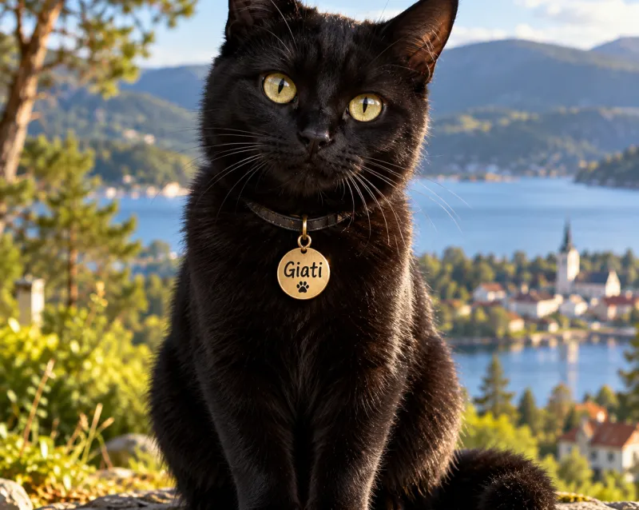
Giati
Giati er en svart katt som vet alt. Katten blir med Pika gjennom et landskap fullt av ting å undre seg over.
Med i Pika-filmene
Tiniak
Tiniak bor i skogen og kjenner hemmelighetene alle andre går forbi: en dråpe, et spor, en lyd under mosen.
Giatini er sulten, og i epletreet henger det mange røde epler. Så kommer Pinnsvinet, Ekornet, Lille Fugl og Kaninen. Hvor mange epler trenger de? Tell med Giatini fra 1 til 5.
▶
Se
Filmen hentes fra YouTube først når du trykker play. Før det lastes ingenting derfra, og etterpå starter ingen andre filmer av seg selv.
?
Snakk om det etterpå
2–5 år
Hvor mange venner kom til Giatini?
Hvilket dyr likte du best?
Kan du vise fem fingre, slik Giatini gjør?
6–9 år
Hva om det kom én venn til? Ville eplene vært nok?
Hvordan kan man dele når det ikke er nok til alle?
Hvor mange epler trenger vi hvis alle i familien skal få ett?
Prøv sammen
Tell fem ting hjemme: skjeer, sko eller kosedyr.
Del ut én ting til hver i familien. Er det nok til alle?
Vis fem fingre, slik Giatini gjør på slutten.
Til deg som voksen
Filmen øver på å telle fra 1 til 5. Barnet oppdager at fem epler og fem venner betyr at alle får ett hver. Det er en tidlig forståelse av at tall hører sammen med mengder.
!
Les
!
Les · kommer
Boka til filmen
Vi lager en bok om «Giatini og de fem eplene», så dere kan lese det dere så sammen.
Filmen hentes fra YouTube først når du trykker play. Før det lastes ingenting derfra, og etterpå starter ingen andre filmer av seg selv.
?
Snakk om det etterpå
2–5 år
Hvilke farger husker du fra regnbuen?
Hvilken farge liker du best?
Hvis du kunne ri på en enhjørning, hvor ville du dratt?
6–9 år
Når ser vi regnbuer? Hva trenger vi?
Hvorfor tror du regnbuen har så mange farger?
Kan man gå helt bort til en regnbue?
Prøv sammen
Stå med ryggen mot sola og spray vann fra en sprayflaske eller hageslange. Ser dere en liten regnbue?
Til deg som voksen
En regnbue kommer når sola skinner bak deg og det regner foran deg. Hver dråpe deler sollyset i farger. Man kan aldri gå helt bort til den, for den flytter seg med deg.
Korte filmer for deg som har begynt å stille de vanskeligere spørsmålene. Om hvordan verden virker, om hvorfor vi gjør som vi gjør, og om å tenke selv.
Første film er under arbeid
Slik er filmene
? Et ekte spørsmål
Hver film starter med ett spørsmål. Ikke et pensum, men noe du faktisk kan lure på.
Undersøk
Vi ser etter, prøver ut og sjekker kildene. Underveis sier vi hva vi vet, og hva vi ikke vet.
! Din egen tanke
Filmen slutter ikke med fasiten. Den slutter med noe du kan tenke videre på.
Spørsmål vi jobber med
Natur
Hvorfor faller ikke månen ned?
Månen faller faktisk hele tiden. Den bommer bare på jorda.
Under arbeidVitenskap
Hvordan vet vi at noe er sant?
Om å teste, måle og ombestemme seg. Og om hvorfor «alle sier det» ikke er nok.
Under arbeidSamfunn
Hvem bestemmer hva som er normalt?
Klær, ord og regler som alle følger. Hvor kommer de fra, og kan de endres?
Under planleggingKortfilm
Alle trykket liker
Et bilde. En gruppechat. En latter som ikke kjennes god. Hva gjør du?
Fra Sokrates på torget i Athen til McLuhan, Foucault og skjermene våre: 34 tenkere som tok «hvorfor?» på alvor. Bla deg gjennom 2400 år med spørsmål om hvordan vi bør leve. Trykk på en filosof for å lese mer.
Sokrates var en gresk filosof fra Athen og regnes som en av de viktigste tenkerne i Vesten. Han skrev aldri noe selv, så alt vi vet om ham, kommer fra elevene hans, særlig Platon og Xenofon.
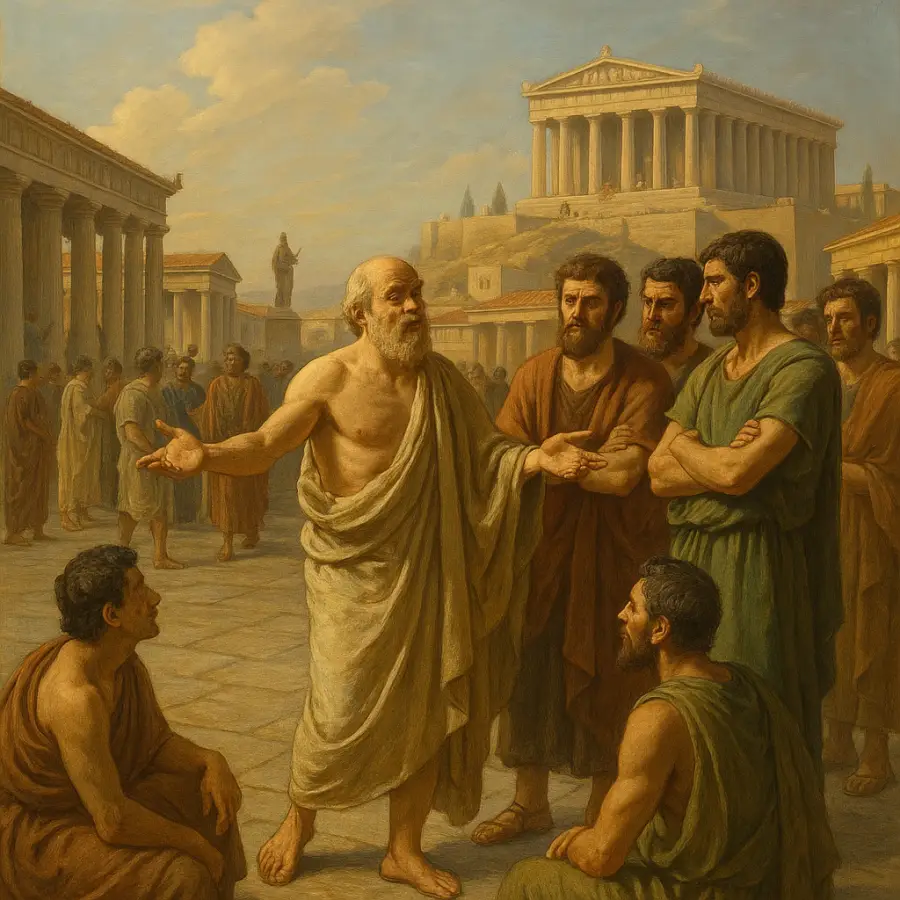
Sokrates (ca. 470–399 f.Kr.)
Hvem var han?
Sokrates var en gresk filosof fra Athen, og han regnes som en av de viktigste tenkerne i Vesten.
Han skrev aldri noe selv. Alt vi vet om ham, kommer fra elevene hans, særlig Platon og Xenofon.
Platon var en gresk filosof, elev av Sokrates og lærer for Aristoteles. Han grunnla Akademiet i Athen, det første kjente universitetet i vestlig historie.
Platon (ca. 427–347 f.Kr.)
Platon utviklet tanken om en todelt virkelighet: sanseverdenen og idéverdenen. Han mente at sann kunnskap kommer av å forstå de evige idéene, som rettferdighet, skjønnhet og det gode.
I dialoger med Sokrates i hovedrollen utforsket han temaer som etikk, politikk, kjærlighet og kunnskap. Hans mest kjente verk er Staten, der han skisserer sin visjon om et rettferdig samfunn styrt av filosofer.
Platons Staten: sammendrag og kjerne
Hva er Staten?
Staten (gresk Politeia) er Platons mest kjente og mest omfattende dialog, skrevet rundt 380 f.Kr. Verket består av ti bøker og har form av en samtale, hovedsakelig mellom Sokrates og flere andre. De diskuterer rettferdighet, samfunnets natur, sjelen og veien til kunnskap.
Kjernen i verket
Hvordan kan vi skape et rettferdig samfunn, og et rettferdig menneske?
Hovedtemaer og idéer
1. Rettferdighet
Sokrates spør: Hva er rettferdighet? Han avviser at det er å «gi hver det som tilkommer ham» eller å «gjøre godt mot venner og ondt mot fiender».
I stedet hevder han at rettferdighet, både i staten og i mennesket, er harmoni: at hver del gjør det den er best egnet til.
2. Idealstaten
Platon beskriver et samfunn i tre lag:
Voktere (filosofer) styrer, med visdom og innsikt.
Hjelpere (krigere) beskytter og forsvarer.
Produsenter (bønder, håndverkere, kjøpmenn) sørger for det materielle livsgrunnlaget.
Hver gruppe må fylle sin rolle, verken mer eller mindre, for at samfunnet skal være rettferdig.
3. Filosofkongen
Platon hevder at bare filosofer er skikket til å styre. De søker sannheten og det gode, og lar seg ikke styre av lyst på makt eller nytelse.
4. Hulelignelsen
Dette er et av Platons mest berømte bilder. Vi er som fanger i en hule som bare ser skygger av virkeligheten.
Filosofen er den som river seg løs, ser lyset (idéverdenen) og vender tilbake for å hjelpe de andre, selv om de i begynnelsen vil stritte imot sannheten.
5. Idéverdenen
Platon hevder at det finnes en usynlig, evig og uforanderlig idéverden, og at det er den som er det virkelige. Alt i vår verden er bare kopier, skygger, av disse fullkomne formene.
6. Sjelen og dyden
Menneskets sjel har tre deler:
Fornuften søker visdom.
Viljen søker ære og mot.
Begjæret søker nytelse og eiendom.
Rettferdighet i den enkelte oppstår når fornuften styrer, viljen støtter og begjæret holdes under kontroll.
Kort oppsummert
Staten er ikke bare en politisk teori, men også en metafysisk og psykologisk visjon. Platon viser at sann rettferdighet krever orden både i sjelen og i staten, og at filosofien er veien til sann innsikt og et godt liv.
Aristoteles var en gresk filosof og vitenskapsmann, elev av Platon og lærer for Aleksander den store. Han regnes som en av de mest innflytelsesrike tenkerne i vestlig filosofi.
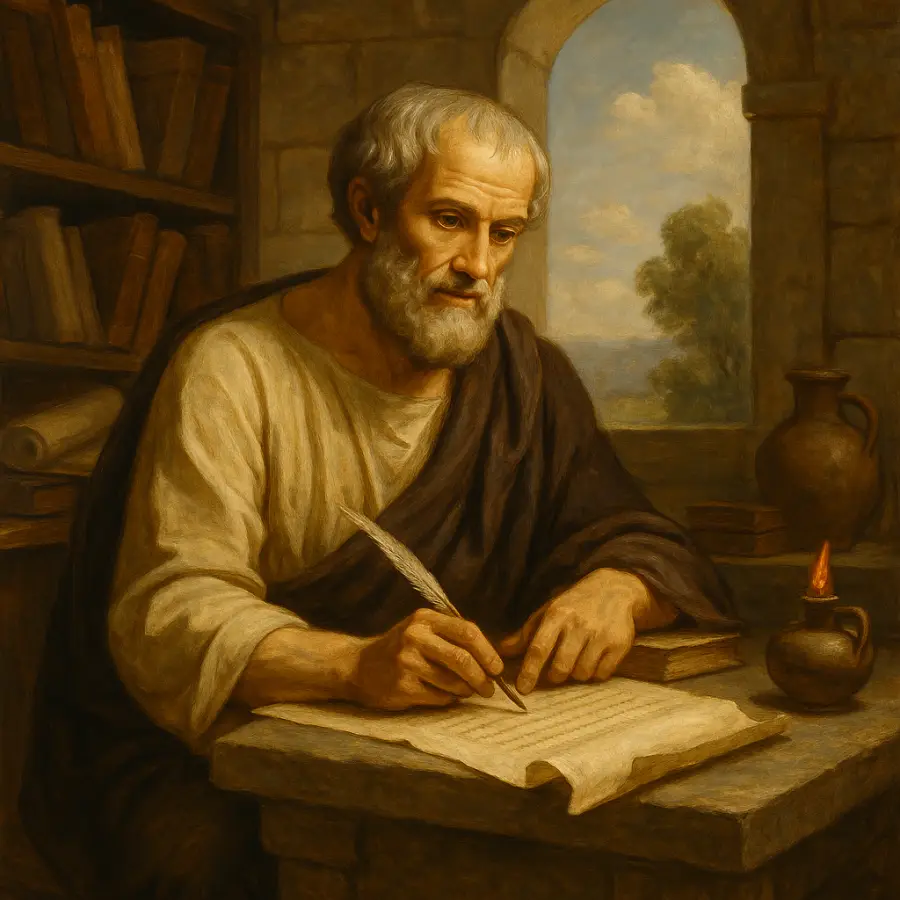
Aristoteles (384–322 f.Kr.)
Han grunnla sin egen skole, Lykeion, i Athen, og skrev om en lang rekke emner, blant annet logikk, etikk, politikk, biologi, fysikk og metafysikk.
Aristoteles var opptatt av å observere verden slik den er. Han utviklet en systematisk og empirisk metode som la grunnlaget for mange vitenskapelige fagfelt.
I motsetning til Platon, som søkte sannheten i idéverdenen, mente Aristoteles at kunnskap må bygge på erfaring og observasjon.
Kort sagt: Aristoteles var en allsidig tenker som ville forstå virkeligheten gjennom fornuft, erfaring og systematisk analyse. Han ble en bro mellom filosofi og vitenskap.
Noen av Aristoteles' verker
Aristoteles skrev en rekke verker som har hatt enorm betydning for filosofi, vitenskap og vestlig tenkning. Mange av skriftene var forelesningsnotater og er bevart som samlinger snarere enn som ferdige bøker.
Her er en oversikt over de viktigste verkene, sortert etter emne.
Logikk: Organon
En samling på seks verker som var grunnlaget for den formelle logikken i over 2000 år:
Kategoriene: inndeling av det som finnes
Om tolkning: språk, utsagn og sannhet
Analytikkene (første og andre): deduktiv og induktiv logikk
Topikken og Sofistiske gjendrivelser: argumentasjon og feilslutninger
Disse tekstene er grunnlaget for syllogismene og klassisk logisk tenkning.
Naturfilosofi og vitenskap
Fysikken: om bevegelse, tid og naturens prinsipper
Om himmelen: kosmologi og universets oppbygning
Om tilblivelse og tilintetgjørelse: læren om elementene
Meteorologien: vær og naturfenomener
Dyrenes historie, Om dyrenes deler og Om dyrenes bevegelse: biologi og zoologi
Aristoteles regnes som Vestens første systematiske biolog.
Etikk
Den nikomakiske etikk: det mest berømte verket, oppkalt etter sønnen Nikomakos
Den eudemiske etikk
Om dyder og laster (kortere skrifter)
Verkene utforsker menneskets mål (lykke, eudaimonia), dydsetikk og den gylne middelvei.
Politikk
Politikken: om bystaten, styreformer, borgerliv og oppdragelse
Retorikken: talekunstens prinsipper
Poetikken: om diktning og tragedie, med særlig vekt på dramaets oppbygning
Poetikken inneholder den første kjente analysen av tragedien og den første litteraturteorien vi kjenner.
Metafysikk
Metafysikken: et av hans mest filosofiske verker, om det som kommer «etter fysikken». Verket handler om væren, vesen, substans og årsaker (form, stoff, formål og bevegelse).
Dette er grunnlaget for metafysisk og ontologisk tenkning i vestlig filosofi.
Epikur var en gresk filosof som grunnla epikureismen, en retning som så nytelse og fravær av smerte som det høyeste gode i livet. Men det handlet ikke om tom nytelsessyke: det viktigste var indre ro (ataraxia) og kroppslig velvære (aponia).
Epikur (ca. 341–270 f.Kr.)
Epikur var en gresk filosof som grunnla epikureismen, en filosofisk retning som så nytelse (hedoné) og fravær av smerte som det høyeste gode i livet.
Dette var ikke en tom eller overfladisk nytelsessyke. Tvert imot la han vekt på indre ro (ataraxia) og kroppslig velvære (aponia) som det viktigste. Dette oppnår man gjennom måtehold, vennskap, ettertanke og frihet fra frykt, særlig frykten for døden og gudene.
Noen hovedpunkter
Lykke er fravær av smerte: Den største lykken finnes i ro og i fravær av fysisk og psykisk smerte.
Måtehold: Nytelse skal søkes med fornuft og ikke føre til større smerte senere.
Fryktløshet: Vi skal ikke frykte døden. Når vi lever, er døden ikke her, og når døden kommer, finnes ikke vi.
Gudene finnes kanskje, men de blander seg ikke inn i livene våre.
Vennskap og enkle gleder er nøkkelen til et godt liv.
Epikurs filosofi var et etisk og praktisk livssyn, ofte levd ut i små fellesskap. Han underviste i hagen sin i Athen, og denne «Hagen» ble et symbol på et enkelt, ettertenksomt og lykkelig liv.
Epikurs skrifter
Epikur skrev mye, men de fleste verkene hans har gått tapt. Likevel kjenner vi noe av tenkningen hans gjennom bevarte brev og sitater, og gjennom senere tilhengere, særlig Lukrets.
Bevarte verker
1. Tre brev
Brevene er bevart gjennom Diogenes Laertios' verk om de berømte filosofenes liv og meninger:
Brev til Herodot: En kort framstilling av naturfilosofien hans, om verdens natur, sanseinntrykk og sjelens natur.
Brev til Pythokles: Om naturfenomener som vær, lyn og stjerner, med vekt på å fjerne frykt og overtro.
Brev til Menoikeus: Et folkelig og lettfattelig brev om etikk, nytelse og det gode liv. Det mest kjente og mest siterte.
2. Hovedlærsetninger (Kyriai doxai)
En samling på 40 korte læresetninger som oppsummerer kjernen i epikureismen: lykke, frykt, nytelse og måtehold.
3. Vatikansamlingen (Sententiae Vaticanae)
En samling på 81 korte fragmenter og utsagn, funnet i Vatikanet, med moralsk og praktisk innhold.
Tapte verker
Ifølge Diogenes Laertios skrev Epikur over 300 bøker. Hovedverket het Om naturen (Peri physeōs) og var på 37 bind.
Mange av disse tekstene ble kopiert og bevart i epikureiske fellesskap og i biblioteket i Herculaneum, som ble begravd da Vesuv hadde sitt utbrudd i 79 e.Kr.
Noen fragmenter av disse verkene er nå rekonstruert fra forkullede manuskripter funnet i Herculaneum.
Epikurs innflytelse gjennom andre
Lukrets skrev lærediktet De rerum natura (Om tingenes natur), som viderefører og forklarer Epikurs naturfilosofi på latin.
Senere epikureere, som Filodemos, bidro til å bevare og tolke Epikurs tenkning, særlig i papyrusrullene fra Herculaneum.
Seneca var en romersk statsmann, forfatter og filosof som levde midt i maktens sentrum, som rådgiver for keiser Nero. Stoisismen hans preges av praktiske råd og refleksjoner om hvordan man kan leve moralsk i en korrupt verden.
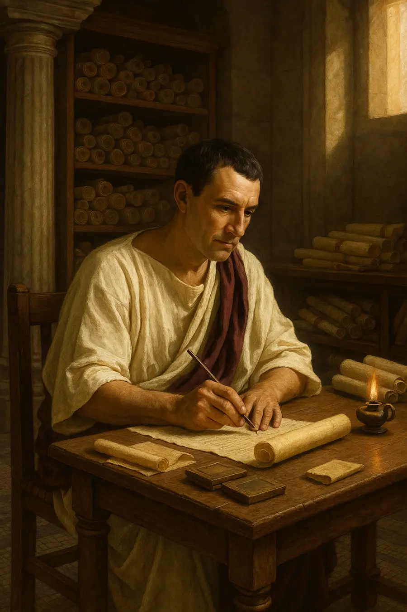
Seneca (ca. 4 f.Kr. – 65 e.Kr.): stoikeren i politikken
Han var en av antikkens mest sammensatte og fascinerende tenkere. Han forente dyp filosofisk innsikt med en stormfull karriere i Romas politiske elite.
Som Neros rådgiver sto han i et spenningsfelt mellom stoisk idealisme og politisk realisme. Livet og verkene hans viser hvordan filosofi både kan være en veiviser i livets utfordringer og et kritisk verktøy i en verden preget av makt og korrupsjon.
Liv og virke: filosof ved maktens hoff
Senecas liv var fullt av motsetninger:
Første eksil (41–49 e.Kr.): Keiser Claudius forviste ham til Korsika etter anklager om utroskap, trolig politisk motivert. Her skrev han noen av sine mest ettertenksomme tekster.
Neros rådgiver (54–62 e.Kr.): Som keiserens lærer og minister prøvde han å dempe Neros tyranniske tilbøyeligheter. Han skrev taler for ham og styrte i praksis riket de første årene.
Fall og tvunget selvmord (65 e.Kr.): Da Nero ble paranoid, ble Seneca anklaget for sammensvergelse og tvunget til å ta sitt eget liv. Ifølge Tacitus møtte han døden med stoisk verdighet.
Senecas stoiske etikk: praktisk visdom
Senecas filosofi var mindre teoretisk enn den til Marcus Aurelius og Epiktet, og mer rettet mot hverdagslivet. Han var opptatt av hvordan man kan bevare moralen og den indre friheten i en verden full av fristelser og farer.
Han la vekt på selvkontroll, måtehold og på å bruke fornuften til å temme lidenskaper og impulser, særlig i møte med makt og fristelser.
1. Dyden (virtus) som det eneste gode
Sann lykke ligger i å leve i samsvar med naturen, det vil si fornuften.
Ytre goder som rikdom, makt og helse er «likegyldige» (adiaphora). De er verken gode eller onde i seg selv, men avhenger av hvordan vi bruker dem.
2. Lidelse og motgang
Lidelse er en del av livet, men ikke et onde. I De Providentia skriver han: «Det som ser ut som straff, er i virkeligheten prøvelser fra Gud.»
Å akseptere skjebnen (amor fati) gir ro.
3. Selvransakelse og tid
I Brev til Lucilius understreker han hvor viktig det er å gå i seg selv hver dag:
«Hvilke dårlige vaner har jeg overvunnet i dag?»
«Hvem har jeg hjulpet?»
Han advarer mot å kaste bort tiden: «Livet er langt nok, hvis du bruker det godt.» (De Brevitate Vitae)
4. Forholdet til makt og rikdom
Selv om Seneca var en av Romas rikeste menn, kritiserte han tom luksus: «Det er ikke den som har for lite, men den som vil ha mer, som er fattig.»
I De Vita Beata forsvarer han at en filosof kan være rik, så lenge han ikke er bundet av rikdommen.
Senecas dilemma: filosof eller politiker?
Senecas rolle ved Neros hoff har vært omstridt:
Forsvarerne ser ham som en stoiker som prøvde å begrense Neros grusomheter.
Kritikerne, som Tacitus, mener han var hyklersk: Han fordømte tyranni, men aksepterte at Nero myrdet sin mor Agrippina.
Hans egen beskrivelse av filosofiens rolle i politikken var tvetydig:
«Den som blander seg i politikken, gjør seg til herskernes tjener. Den som holder seg unna, gjør seg til egoismens tjener.»
Senecas ettermæle
Senecas innflytelse rekker langt:
Kristendommen: Tankene hans om nåde og menneskelighet påvirket kirkefedre som Augustin.
Renessansen: Erasmus og Calvin beundret stilen og etikken hans.
Moderne psykologi: Kognitiv atferdsterapi (KAT) bygger på teknikkene hans for å mestre negative tanker.
Livet hans viser at filosofien kan være et kompass selv i en korrupt verden. Ikke for å flykte fra virkeligheten, men for å møte den med klarhet.
«Livets lengde avhenger ikke av åndenes vilje, men av din egen.» Seneca, De Brevitate Vitae
Epiktet ble født som slave, men ble senere en fri mann og en av de mest innflytelsesrike stoiske lærerne. Han skrev ingenting selv, men eleven Arrian nedtegnet læren hans i Håndboken (Encheiridion) og Samtaler.
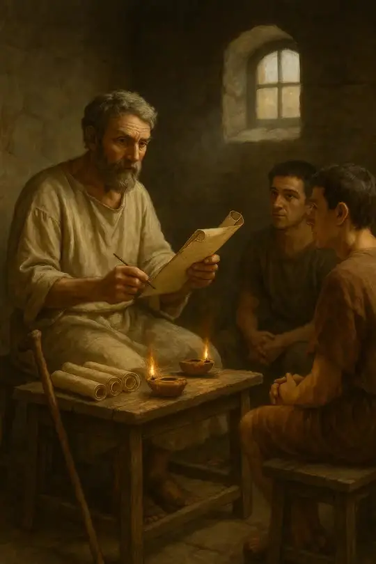
Epiktet (ca. 50–135 e.Kr.): den frigitte slaven
Livshistorie
Epiktet ble født som slave i Hierapolis, i dagens Tyrkia. En del av ungdommen tilbrakte han i Roma som slave hos Epafroditos, en frigitt slave som tjente keiser Nero.
Til tross for sin stilling utviklet Epiktet en sterk interesse for filosofi, særlig stoisismen. Senere ble han satt fri og viet seg til å undervise i filosofi i Roma.
Da keiser Domitian forviste alle filosofer fra Roma i 93 e.Kr., flyttet Epiktet til Nikopolis i Hellas. Der grunnla han sin egen filosofiskole.
Den trofaste eleven Arrian nedtegnet læren hans i to viktige verker: Håndboken (Encheiridion) og Samtaler (Diatribai).
Kjerneidéer i Epiktets filosofi
1. Skillet mellom det vi kan og ikke kan kontrollere
Epiktets mest sentrale lære er skillet mellom det vi kan kontrollere, og det vi ikke kan kontrollere:
Det vi kan kontrollere (den prohairetiske sfæren): Våre meninger, ønsker, handlinger og reaksjoner, altså vilje og holdninger.
Det vi ikke kan kontrollere: Ytre hendelser, rikdom, helse, omdømme og andre menneskers handlinger.
«Det som plager menneskene, er ikke tingene, men deres meninger om tingene.»
Vi lider når vi forventer å kontrollere det ukontrollerbare, eller når vi lar ytre omstendigheter bestemme vår indre ro.
2. Frihet gjennom aksept
Selv om Epiktet en gang var slave i bokstavelig forstand, lærte han at den sanne friheten ligger i sinnet. Et menneske kan være fritt selv i lenker, hvis det har kontroll over tankene og følelsene sine.
Et eksempel: Hvis noen fornærmer deg, er det ikke fornærmelsen som sårer deg, men din egen oppfatning av den.
Vi skal ikke la oss gjøre til slaver av følelser, begjær eller frykt. Han lærer oss å være herrer innvendig, ikke slaver utvendig.
3. Lidelse kommer av gale forestillinger
Menneskelig lidelse skyldes ofte irrasjonelle ønsker:
Å ønske det som ligger utenfor vår makt, for eksempel berømmelse og rikdom.
Å frykte det uunngåelige, for eksempel død og sykdom.
Løsningen er å forme ønskene våre slik at de stemmer med naturens orden og med fornuften. Selvkontroll handler for Epiktet om å bruke fornuften til å akseptere skjebnen og møte livets prøvelser rolig og bevisst.
4. Rollens og pliktens etikk
Epiktet understreker at vi må akseptere vår plass i livet og utføre pliktene våre med verdighet:
«Husk at du er skuespiller i et stykke, og at det er forfatteren som bestemmer hvor lenge du skal spille.»
Enten vi er far, sønn, lærer eller borger, skal vi handle med dyd og ansvar.
Epiktets lære i praksis
Stoisk meditasjon: Tenk gjennom hva som kan gå galt i dag, og godta at det ligger utenfor din kontroll.
Følelsesmessig immunitet: Tren deg opp til ikke å la ytre hendelser rokke ved din indre ro.
Fokus på det vesentlige: Lev enkelt og konsentrer deg om det som virkelig betyr noe.
Epiktets filosofi handler om å frigjøre seg mentalt, uansett omstendigheter. Sinnet vårt er fritt, uansett ytre forhold.
Læren hans har påvirket både antikke tenkere og moderne selvutviklingsbevegelser, blant annet kognitiv atferdsterapi (KAT).
Marcus Aurelius var romersk keiser og forfatter av Til seg selv (Meditasjoner), en samling personlige notater som uttrykker en dyp og praktisk stoisk livsholdning.
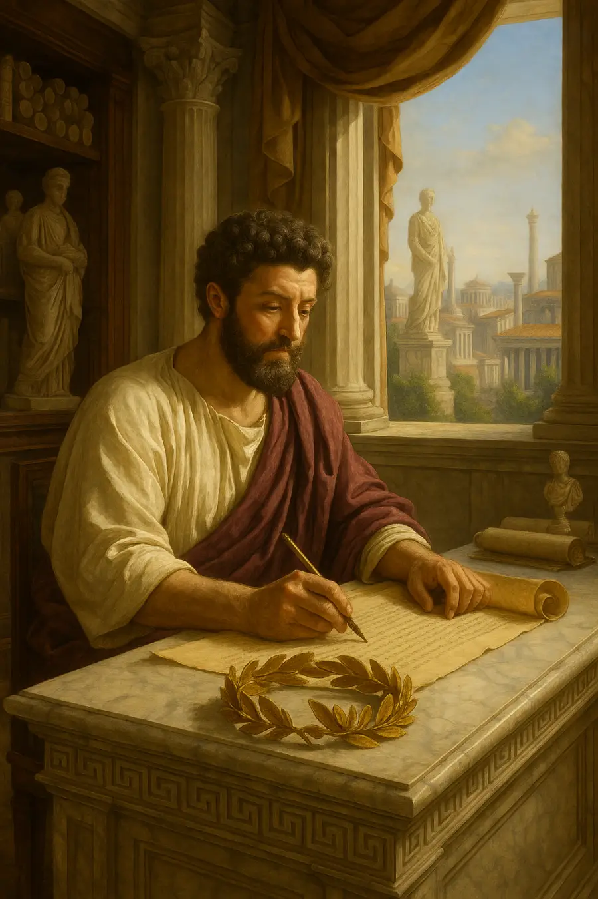
Marcus Aurelius (121–180 e.Kr.): keiseren og dagbokskriveren
Selv om han var en av de mektigste mennene i Romerriket, er det den filosofiske arven som har gjort ham udødelig. Til seg selv er ikke bare en filosofisk tekst, men en praktisk veiledning i å leve et godt liv. Den er skrevet av en mann som selv kjempet med tvil, frustrasjon og maktens fristelser.
Kjernen i etikken hans
Alt er forgjengelig, men dyd og fornuft gir livet mening.
Vi må leve i harmoni med naturen og med vår rolle som fornuftsvesener.
Gjør godt uten å vente noe tilbake.
Stoisk keiser i en ustabil verden
Marcus Aurelius var en uvanlig hersker: en filosof på keisertronen, opptatt av plikt, rettferdighet og selvkontroll. Mens andre keisere jaget personlig ære, så han makten som en byrde.
Regjeringstiden hans var preget av kriger mot parterne og germanske stammer, og av en ødeleggende pestepidemi, Antoninske pest. Likevel brukte han filosofien som et verktøy for å mestre kaoset, ikke for å flykte fra det.
Midt i krig, sykdom og ansvar prøvde han å bevare roen og rettferdigheten. For ham var det høyeste idealet å være rolig, rettferdig og fri i hjertet.
Hva gjør Til seg selv spesiell?
Boken er unik av flere grunner:
1. Den er uformell og personlig. Den er skrevet på gresk, ikke på latin, som var elitens språk i Roma, nesten som en samtale med ham selv.
2. Den er praktisk, ikke teoretisk. Marcus spør seg selv: «Hva er det riktige å gjøre?», i stedet for å drøfte abstrakte prinsipper.
3. Den viser et maktmenneskes sårbarhet. Han minner seg selv på ikke å bli irritert på folk, å akseptere døden og å forbli ydmyk.
Stoisisme i praksis
Marcus Aurelius var stoiker, og boken er full av stoisk visdom:
Kontroll:«Du har makt over tankene dine, ikke over ytre hendelser. Forstå dette, og du vil finne styrke.»
Perspektiv:«Tenk ofte på hvor raskt alt forsvinner … fra det som finnes nå, til minnet om det som skal komme.»
Handling:«Ikke snakk om hva et godt menneske bør være. Vær det.»
Til seg selv
Til seg selv er en samling av Marcus Aurelius' personlige refleksjoner, skrevet som en form for selvterapi og filosofisk trening. Boken er ingen systematisk avhandling, men en rekke notater der keiseren minner seg selv på stoiske prinsipper for å møte livets utfordringer.
Hovedtemaer i Til seg selv
1. Naturens orden og den universelle fornuften (logos)
Marcus Aurelius mente at universet styres av en fornuftig orden (logos), og at mennesket bør leve i harmoni med den. Han skriver ofte om å akseptere skjebnen (amor fati, «kjærlighet til skjebnen») og om å se alle hendelser som del av en større sammenheng.
«Alt som skjer, skjer med rette.» (Bok 4)
«Det som ikke skader samfunnet, kan ikke skade den enkelte.» (Bok 5)
2. Dødelighet og tidens forgjengelighet
En tanke som går igjen, er at livet er kort, og at berømmelse og lykke er flyktig. Marcus minner seg selv på å leve fullt ut i nået, uten å kaste bort tid på overfladiske bekymringer.
«Du har levd som om du skulle leve i tusen år. Men hvor lang tid er det igjen? … Bruk de gjenværende timene godt.» (Bok 4)
«Tiden er en elv, en rivende strøm av hendelser.» (Bok 4)
3. Kontroll over tankene
Ifølge stoikerne er det ikke ytre hendelser som plager oss, men hvordan vi tolker dem. Marcus understreker at sinnet kan velge hvordan det reagerer på omverdenen.
«Vår glede og vår smerte avhenger ikke av hendelsene, men av hvordan vi oppfatter dem.» (Bok 8)
«Fjern dommen, og du har fjernet følelsen av at noe er ondt.» (Bok 8)
4. Plikt og samfunnsansvar
Som keiser var Marcus opptatt av å tjene andre. Han minnet seg selv på at alle mennesker er del av et fellesskap, og at det var hans ansvar å handle rettferdig.
«Det som ikke er nyttig for bikuben, er ikke nyttig for bien.» (Bok 6)
«Menneskets oppgave er å være til nytte for andre mennesker.» (Bok 8)
5. Motstandskraft i lidelse og motgang
Marcus Aurelius møtte krig, pest og svik, men lærte å se prøvelser som muligheter til å styrke karakteren.
«Det som står i veien, blir veien.» (Bok 5)
«Ingen kan hindre deg i å handle i samsvar med naturen.» (Bok 8)
Hvorfor er boken fortsatt aktuell?
Boken handler egentlig om hvordan man bevarer integriteten og den indre roen i en kaotisk verden. Det er like aktuelt i dag som i antikken.
Den appellerer til alle som vil leve mer bevisst, takle motgang bedre og finne mening i plikten. Marcus Aurelius skrev ikke for å undervise andre, men for å oppdra seg selv. Likevel har Til seg selv blitt et av historiens mest innflytelsesrike filosofiske verker.
Marcus' ettermæle
Han var ingen perfekt keiser. Han forfulgte kristne og utnevnte den upålitelige Commodus til sin etterfølger. Likevel har tankene hans overlevd i århundrer.
Til seg selv er i dag en klassiker, lest av alle fra soldater, idrettsutøvere, ledere og psykologer til alle som søker visdom under press.
De siste ordene hans skal ha vært: «Gå mot den nedgående solen, jeg må gjøre det samme.» En stoisk avslutning på et liv i pliktens tjeneste.
Kort sagt:Til seg selv handler om å leve et godt liv gjennom selvdisiplin, visdom og tjeneste for andre. Den er en veiledning i å være menneske i en ufullkommen verden.
Sextus Empiricus var en gresk filosof og lege, kjent som en sentral skikkelse i antikkens skeptisisme. Han tilhørte den pyrrhonske retningen, som mente at sikker kunnskap er umulig, og at veien til sinnsro (ataraxia) går gjennom å avstå fra å dømme om det man ikke kan ha sikker innsikt i.
Sextus Empiricus (ca. 160–210 e.Kr.)
Han tilhørte den pyrrhonske retningen, som hevdet at sikker kunnskap er umulig å oppnå. Veien til sinnsro (ataraxia) gikk derfor gjennom å avstå fra å felle dommer om ting man ikke kan ha sikker innsikt i.
Hans viktigste verk er Pyrrhōneioi hypotypōseis («Grunntrekk av pyrrhonismen»). Her argumenterer han systematisk mot dogmatisk filosofi og drøfter kunnskapens begrensninger.
Tankene til Sextus Empiricus har hatt stor innflytelse på filosofiens utvikling, særlig innen erkjennelsesteori og vitenskapelig metode.
Augustin, også kjent som Augustin av Hippo, var en av de mest innflytelsesrike tenkerne i kristen filosofi og teologi. Han var biskop i Hippo i Nord-Afrika og forente kristen tro med klassisk filosofi, særlig Platon og nyplatonismen.
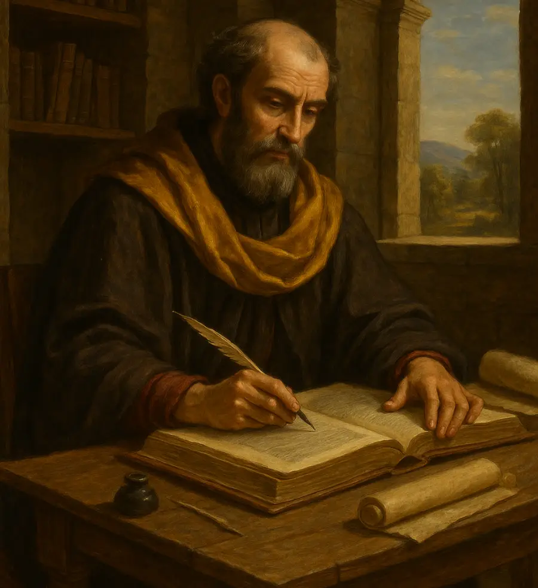
Augustin (354–430 e.Kr.): kirkefar og filosof
Augustin, også kjent som Augustin av Hippo, var en av de mest innflytelsesrike tenkerne i kristen filosofi og teologi. Han levde i Nord-Afrika og var biskop i byen Hippo.
I verkene sine forente han kristen tro med klassisk filosofi, særlig påvirket av Platon og nyplatonismen.
Augustin er særlig kjent for to store verker:
Bekjennelser: en selvbiografisk reise gjennom tro og tvil, og et tidlig eksempel på indre refleksjon i vestlig litteratur.
Guds stat: en visjon om det himmelske mot det jordiske samfunnet, skrevet etter Romas fall.
Han tenkte dypt over tiden, den frie vilje, nåden, det ondes problem og Guds vesen. Tankene hans har hatt enorm betydning for middelalderens filosofi og senere kristen teologi, særlig i den katolske og den protestantiske tradisjonen.
Kort sagt: Augustin forente tro og tenkning, og la grunnlaget for mye av den religiøse og filosofiske utviklingen i Vesten.
Bekjennelser
Verket Bekjennelser (Confessiones) regnes som et høydepunkt både i kristen litteratur og i filosofisk selvrefleksjon.
Augustins liv og omvendelse
Augustin ble født i Nord-Afrika, i dagens Algerie. Først var han påvirket av manikeismen, en dualistisk religion. Så gjennomgikk han en dyp åndelig krise og omvendte seg til slutt til kristendommen, under påvirkning av biskop Ambrosius av Milano.
Den dramatiske omvendelsen kjenner vi fra Bekjennelser, der han berømt utbryter: «Gi meg kyskhet og avholdenhet, men ikke ennå!»
En selvbiografisk og filosofisk reise
Bekjennelser er ikke bare en selvbiografi, men også en grunnleggende teologisk og filosofisk tekst. Boken er skrevet som en lang bønn til Gud, der Augustin gransker sitt eget liv, syndene sine og sin søken etter sannheten.
Verket er banebrytende på flere måter:
1. Psykologisk dybde. Augustin utforsker hukommelsen, tiden og menneskets indre på en måte som var revolusjonerende i antikken.
2. Tvil og tro. Han viser hvordan tvil og intellektuell nysgjerrighet kan lede til tro. Dette inspirerte senere tenkere som Blaise Pascal og Søren Kierkegaard.
3. Tidsfilosofi. I bok XI reflekterer han over tiden som noe subjektivt, en tanke som foregrep moderne tenkning.
Augustins filosofi og teologi
Augustin forener kristen tro med gresk filosofi, særlig Platon og nyplatonismen. Noen sentrale temaer:
Arvesynd og nåde: Menneskets vilje er svak på grunn av syndefallet, og frelsen kommer bare gjennom Guds nåde.
Guds stat (De civitate Dei): Han stiller den jordiske staten (verdslig makt) opp mot Guds rike (den evige sannhet).
Kjærligheten som drivkraft:«Elsk, og gjør hva du vil.» Sann kjærlighet leder til rett handling.
Augustins ettermæle
Augustin har hatt enorm innflytelse på:
Vestlig teologi: Nådelæren hans ble sentral i reformasjonen. Luther og Calvin var augustinere.
Filosofi: Tankene hans om det indre selvet påvirket Descartes' «Jeg tenker, altså er jeg».
Litteratur:Bekjennelser er et forbilde for selvbiografisk skriving.
Kritikk og debatt
Augustins syn på seksualiteten, som han så som en følge av syndefallet, har vært kritisert. Det samme har bruken av tvang mot kjettere, for eksempel donatistene. Likevel er han en nøkkelskikkelse i vestlig idéhistorie.
Konklusjon: Augustin bygger bro mellom antikkens filosofi og den kristne middelalderen. Bekjennelser viser hvordan tro og fornuft kan forenes i en søken etter mening, en reise som fortsatt gir gjenklang i dag.
Boethius (ca. 480–524 e.Kr.) var en romersk filosof, statsmann og forfatter som levde i overgangen mellom antikken og middelalderen. Han er mest kjent for Filosofiens trøst, som han skrev i fengselet mens han ventet på å bli henrettet.
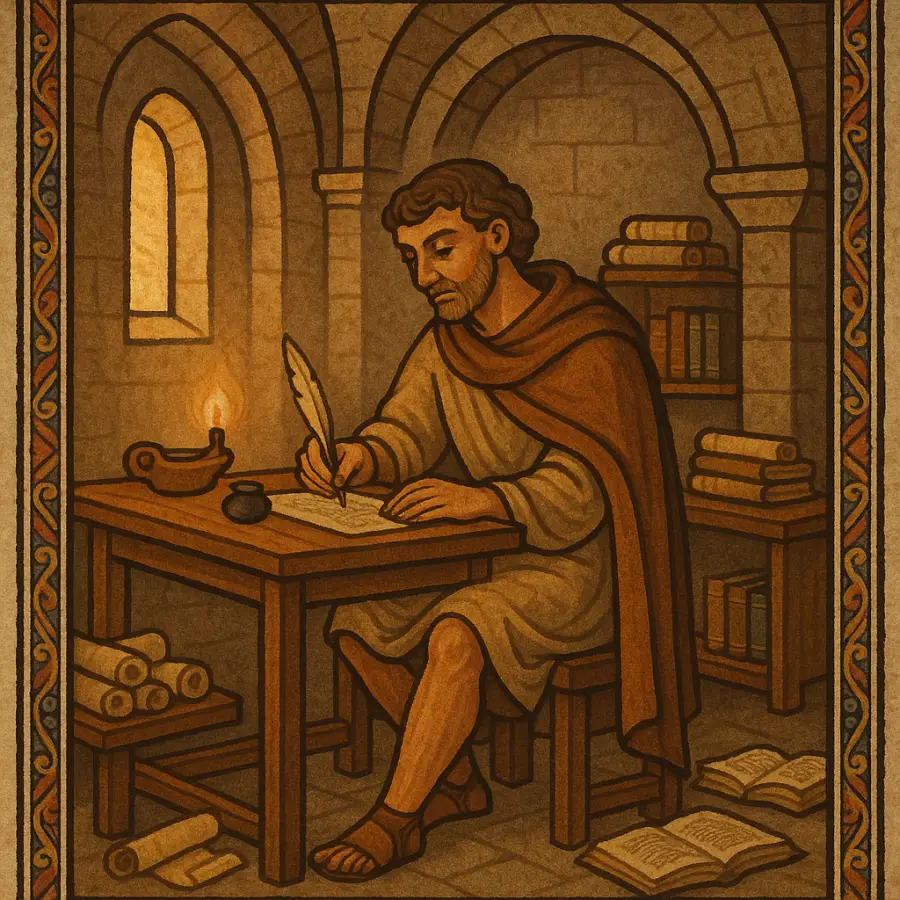
Han er mest kjent for verket De Consolatione Philosophiae (Filosofiens trøst), som han skrev i fengselet mens han ventet på å bli henrettet. Verket er en dialog mellom Boethius og Filosofien, framstilt som en person. Hos henne søker han trøst i tenkningen og det gode midt i livets urettferdighet.
Boethius forsøkte å forene kristen tro med klassisk gresk filosofi, særlig Platons og Aristoteles' tenkning. Han regnes som en brobygger mellom antikkens visdom og middelalderens teologiske tradisjon. Han fikk stor innflytelse på tenkere som Thomas Aquinas og hele den skolastiske bevegelsen.
Filosofiens trøst
Filosofiens trøst ble skrevet rundt 524 e.Kr., mens Boethius satt fengslet og ventet på henrettelse. Boken er en dialog mellom Boethius og Fru Filosofi, som trøster ham ved å drøfte skjebnen, lykken, den frie vilje og hva sann lykke egentlig er.
Sjanger: Filosofisk dialog, klassisk og teologisk refleksjon
Ramme: Boethius skriver fra fengselet og klager over sitt urettferdige fall, da Fru Filosofi viser seg for å veilede ham.
Oppbygning og sentrale temaer
Verket er delt i fem bøker, der prosa og poesi veksler (såkalt prosimetrum).
Bok 1: Boethius' klage
Boethius sitter fengslet og skriver et sorgfullt dikt om sin ulykke.
Fru Filosofi dukker opp, jager bort selvmedlidenhetens «muser» og stiller diagnosen: Han har glemt hva sann lykke er, og hvordan universet er innrettet.
Tema: Lykkens ustadighet, og behovet for visdom framfor materiell suksess.
Bok 2: Lykkens natur
Filosofien hevder at Lykken i sitt vesen er foranderlig. Hennes «gaver», som rikdom, makt og berømmelse, er flyktige og derfor verdiløse.
Boethius må innse at sann lykke ikke kan avhenge av ytre omstendigheter.
Kjent sitat (Lykken taler):
«Ustadighet er mitt innerste vesen; det er den leken jeg aldri slutter å leke …»
Bok 3: Det høyeste gode
Filosofien leder Boethius til å forstå at det høyeste gode (Summum Bonum) er Gud, kilden til sann lykke.
Jordiske mål som rikdom, makt og nytelse er bare ufullstendige skygger av dette guddommelige gode.
Tema: Platonske og stoiske tanker om dyd og sjelens oppstigning mot det guddommelige.
Bok 4: Det ondes problem
Boethius spør hvorfor det onde ser ut til å blomstre hvis Gud er rettferdig.
Filosofien forklarer at det onde er svakhet, ikke makt. Onde mennesker er slaver av sine begjær og i bunn og grunn ulykkelige.
Sammenligning: Det onde er som en sykdom, et fravær av det sanne gode og ikke en kraft i seg selv.
Bok 5: Fri vilje og guddommelig forsyn
Boethius tar opp motsetningen mellom den frie vilje og Guds forhåndsviten.
Filosofien skiller mellom:
Forsynet: Guds tidløse kunnskap om alt som skjer.
Skjebnen: Hendelsenes utfoldelse i tiden, der menneskets valg spiller inn.
Avicenna (980–1037), i den islamske verden kjent som Ibn Sina, var en persisk universalgeni, filosof og lege. Verkene hans fikk dyp innflytelse både på den islamske gullalderen og på vestlig middelaldertenkning.
Hvem var Avicenna?
Viktige bidrag
Medisin: Hans mest berømte verk, Legekunstens kanon (Al-Qānūn fī al-Ṭibb), ble i flere hundre år standard lærebok i medisin i Europa og den islamske verden.
Filosofi: Avicenna forente aristotelisk filosofi med islamsk teologi, særlig i verket Helbredelsens bok (Kitāb al-Shifāʾ). Der videreutviklet han logikk, metafysikk og erkjennelsesteori.
Vitenskap: Han ga viktige bidrag til astronomi, kjemi, psykologi og matematikk.
Ettermæle
Avicennas syntese av filosofi og vitenskap la grunnlaget for senere generasjoner. Han påvirket framtredende tenkere som Thomas Aquinas og Albertus Magnus, og slo bro mellom østlige og vestlige tankeretninger.
Avicenna hylles fortsatt som en av historiens største hjerner, et bilde på intellektuell nysgjerrighet og kunnskap på tvers av fag.
Thomas Aquinas (1225–1274) var en italiensk dominikanermunk, teolog og filosof, og regnes som en av de mest innflytelsesrike tenkerne i vestlig tradisjon. Hovedverket hans, Summa Theologica, tar for seg spørsmål om Gud, etikk, lov og menneskets natur.
Thomas Aquinas (1225–1274) var en italiensk dominikanermunk, teolog og filosof. Han regnes som en av de mest innflytelsesrike tenkerne i vestlig filosofi og kristen teologi.
Han er mest kjent for å ha forent Aristoteles' filosofi med kristen teologi. Resultatet ble et helhetlig tankesystem som ble grunnlaget for skolastikken.
Aquinas la vekt på harmonien mellom tro og fornuft. Han mente at sannheter som er åpenbart av Gud, og sannheter som mennesket finner med fornuften, til syvende og sist støtter hverandre.
Han ble helgenkåret og senere utnevnt til kirkelærer.
Summa Theologica
Hovedverket hans, Summa Theologica (eller Summa Theologiae), er en monumental syntese av kristen lære, aristotelisk filosofi og middelaldersk skolastisk tenkning.
Oppbygning
Summa er delt i tre hoveddeler, med et supplement som ble lagt til senere:
Første del (Prima Pars): Gud, skapelsen, englene og menneskets natur.
Andre del, som selv er delt i to:
Første del av andre del (Prima Secundae): Generell etikk, menneskelige handlinger og moral.
Andre del av andre del (Secunda Secundae): Dyder, laster og konkrete moralske spørsmål.
Tredje del (Tertia Pars): Kristus, inkarnasjonen og sakramentene. Denne delen ble aldri fullført fordi Aquinas døde.
Supplement: Satt sammen av Aquinas' tidligere skrifter for å fullføre verket.
Metode
Verket er skrevet i skolastisk spørsmål-og-svar-form. Hver del stiller et spørsmål, legger fram innvendinger, gir Aquinas' eget svar (sed contra og respondeo) og besvarer til slutt innvendingene.
Aquinas forener tro og fornuft. Han hevder at guddommelig åpenbaring og menneskelig forstand utfyller hverandre.
Sentrale temaer
De fem veier (Quinque Viae): Aquinas' berømte argumenter for Guds eksistens, for eksempel den ubevegede beveger, den første årsak og det nødvendige vesen.
Naturretten: Moralske prinsipper som ligger i menneskets natur, og som kan erkjennes gjennom fornuften.
Dydsetikk: Vekt på gode vaner, altså dyder som klokskap, rettferdighet, mot og måtehold, og på menneskets endelige mål: lykksalighet (beatitudo).
Kristologi og sakramenter: Kristi og Kirkens rolle i frelsen.
Innflytelse
Verket ble grunnleggende for katolsk teologi, særlig etter at Kirken sluttet seg til det. Aquinas ble utnevnt til kirkelærer i 1567.
Forsoningen hans av aristotelisk filosofi og kristen lære formet tenkningen både i middelalderen og i moderne tid.
Summa er fortsatt en nøkkeltekst innen filosofi, teologi og etikk.
Ettermæle
Aquinas' ideer påvirket senere tenkere som Duns Scotus, Leibniz og moderne thomister.
Det andre vatikankonsil (1962–65) bekreftet hans betydning for katolsk utdanning.
Vektleggingen av fornuft og naturrett preger fortsatt debatter innen etikk, rettsfilosofi og metafysikk.
Niccolò Machiavelli (1469–1527) var en italiensk diplomat, filosof og forfatter fra Firenze som levde i renessansen, en tid med politisk uro i Italia. Han er mest kjent for sine politiske skrifter og sine skarpe innsikter i makt og lederskap.
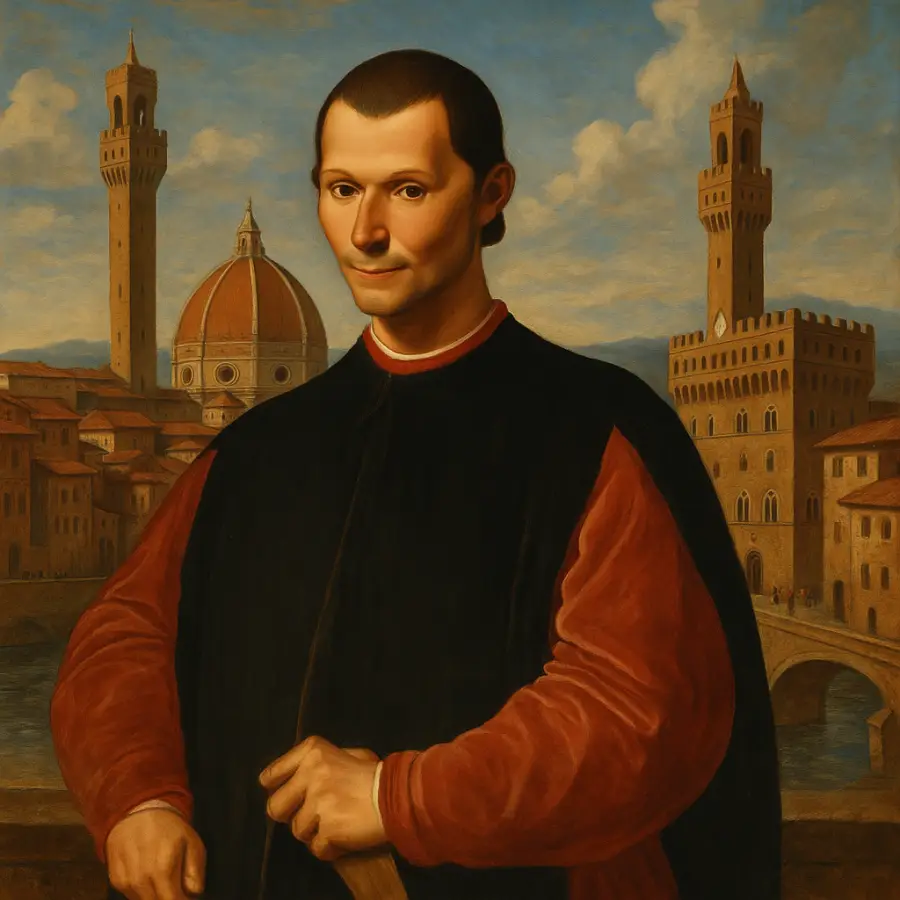
Niccolò Machiavelli (1469–1527) kalles gjerne «den moderne politiske tenkningens far».
Hvem var han?
Italiensk diplomat, filosof og forfatter fra Firenze.
Levde i renessansen, en tid med politisk uro i Italia.
Mest kjent for sine politiske skrifter og sine skarpe innsikter i makt og lederskap.
Fyrsten
Fyrsten (Il Principe) ble skrevet i 1513, i en urolig periode i Italia. Medici-familien hadde tatt makten tilbake i Firenze, og Machiavelli, en tidligere diplomat, ønsket å vinne tilbake politisk gunst ved å gi praktiske råd om styring. Boken ble først utgitt i 1532, etter hans død.
Verket er en pragmatisk veiledning for herskere i hvordan de skal vinne, beholde og utvide politisk makt. Ofte setter det effektivitet foran vanlig moral.
Sentrale temaer
Makt og realpolitikk
Machiavellis mest kjente argument er at en hersker må sette makt og stabilitet foran etiske hensyn. Et kjent utsagn fra boken lyder:
«Det er bedre å være fryktet enn elsket, hvis man ikke kan være begge deler.»
Bak dette ligger tanken om at frykt sikrer kontroll, mens kjærlighet er ustadig.
Virtù og fortuna
Virtù: En leders styrke, list og tilpasningsevne, altså evnen til å forme sin egen skjebne. Machiavelli roser herskere som kan vende omstendighetene til sin fordel.
Fortuna: Skjebnens og tilfeldighetenes uforutsigbare krefter i politikken. De kan likevel temmes: En vellykket fyrste må mestre virtù for å stå imot fortuna.
Målet helliger midlet
Machiavelli hevder at moralen ikke skal binde politisk handling. Bedrag, grusomhet og makt er berettiget hvis de sikrer statens overlevelse. Etikk skal ikke stå i veien for effektivt styre, og en leder må tilpasse seg skiftende omstendigheter.
Folkets rolle
En fyrste må balansere mellom undertrykkelse og popularitet. Grusomhet kan være nødvendig, men for hard undertrykkelse kan føre til opprør. Machiavelli råder herskere til å unngå å bli hatet av folket.
Det omstridte
Amoralsk, ikke umoralsk: Machiavelli tar ikke nødvendigvis til orde for det onde, men erkjenner at det er nødvendig i politikken.
Kirkens fordømmelse: Den katolske kirke fordømte Fyrsten for dens verdslige og hensynsløse syn på makt.
Feiltolkning: Ordet «machiavellisk» brukes ofte om svik og manipulasjon, selv om Machiavelli selv så rådene sine som pragmatiske, ikke onde.
Kritikk og motargumenter
Moralsk fordømmelse: Kritikere mener at Machiavellis råd fremmer tyranni og uetisk styre.
Historisk sammenheng: Noen forskere mener at Fyrsten var satire, eller et desperat forsøk på å få tilbake stillingen sin, og ikke en oppriktig anbefaling av hensynsløshet.
Innflytelse og ettermæle
Politisk teori:Fyrsten er et grunnverk i moderne statsvitenskap og påvirket tenkere som Hobbes og Rousseau.
Ledelse: Ideene hans er fortsatt aktuelle i diskusjoner om autoritært styre, diplomati og realpolitikk.
Populærkultur: «Machiavellisk» ble et begrep for listig og hensynsløs politikk, og brukes mye i litteratur, film og psykologi om manipulerende atferd.
Machiavelli studeres i statsvitenskap, ledelsesfag og filosofi.
Han var mer enn en kyniker: Han ønsket stabilitet og orden for hjemlandet sitt.
Avslutning
Fyrsten er fortsatt en av historiens mest omdiskuterte politiske tekster. Den hensynsløse pragmatismen utfordrer tradisjonell etikk og gjør boken både forhatt og beundret.
Enten man ser den som en håndbok for tyranner eller som en realistisk veiledning i statskunst, fortsetter Machiavellis verk å prege samtalen om makt, lederskap og moral.
Machiavellis genialitet ligger i at han uten å vike undersøker makten, ikke slik den burde være, men slik den er.
Francis Bacon (1561–1626) var en engelsk filosof og statsmann som regnes som den vitenskapelige metodens far. Hovedverket hans, Novum Organum (1620), la fram en ny logikk for å finne sannheten gjennom systematisk utforskning av naturen.
Francis Bacon (1561–1626) var en engelsk filosof, statsmann, vitenskapsmann og forfatter. Han regnes som den vitenskapelige metodens far og som en nøkkelfigur i utviklingen av empirismen.
Bacon mente at kunnskap skulle bygge på nøye observasjon, eksperimenter og induktiv slutning, ikke bare på tradisjonelle autoriteter eller abstrakt logikk.
Som lordkansler under kong Jakob I hadde Bacon også en viktig politisk rolle. Karrieren endte likevel i skandale etter anklager om korrupsjon. Hans intellektuelle arv levde videre.
Ettermæle
Pioner for moderne vitenskapelig tenkning
Talsmann for empirisk forskning
Inspirerte senere filosofer og vitenskapsmenn som John Locke og Isaac Newton
Kjent sitat
«Kunnskap er makt.»
Novum Organum (1620)
Novum Organum, som betyr «Det nye redskapet», er et grunnleggende verk i vitenskapsfilosofien og en nøkkeltekst i den vitenskapelige revolusjonen. Boken kritiserer den aristoteliske skolastikken og foreslår en ny empirisk og induktiv metode for vitenskapelig forskning.
Bakgrunn og formål
Et svar til Aristoteles: Bacon utfordrer Aristoteles' Organon, som bygde på deduktiv logikk (syllogismer) og abstrakt resonnering. Bacon mener at denne metoden fører til intellektuell stillstand.
Et oppgjør med idolene: Han kritiserer menneskelige fordommer, «forstandens idoler», som forvrenger sannheten, og tar til orde for en klar og systematisk tilnærming til kunnskap.
Mål: Å skape en ny vitenskapelig metode basert på observasjon, eksperimenter og induksjon, slik at mennesket kan mestre naturen til sitt eget beste («kunnskap er makt»).
De fire idolene
Bacon peker på fire typer fordommer som hindrer objektiv forskning:
Stammens idoler: Begrensninger i selve menneskenaturen, for eksempel sansefeil.
Hulens idoler: Den enkeltes fordommer, formet av oppdragelse eller temperament.
Torgets idoler: Villedende språk og begrepsbruk.
Teatrets idoler: Blind tilslutning til filosofiske systemer eller tradisjoner.
Løsningen er grundig skepsis og empirisk etterprøving.
Induksjon mot deduksjon
Tradisjonell deduksjon går fra generelle prinsipper til det enkelte. Den kan lett føre galt av sted hvis premissene er feil.
Bacons induksjon generaliserer gradvis ut fra observerte fakta, ved hjelp av:
Systematisk innsamling av data (naturhistorier).
Sammenligningstabeller som viser om et fenomen er til stede, fraværende, eller i hvilken grad det opptrer.
Utelukkelse av falske årsaker, slik at forklaringene snevres inn.
Målet er å finne «formene», naturens grunnleggende lover.
Empiri og eksperimenter
Kunnskap må komme fra sanseerfaring og kontrollerte eksperimenter.
«Avgjørende tilfeller»: Nøkkeleksperimenter som klart bekrefter eller avkrefter en hypotese.
Praktisk nytte: Vitenskapen skal gjøre menneskers liv bedre. Dette er en tidlig formulering av tanken om anvendt vitenskap.
Kritikk av spekulativ filosofi
Bacon avviser resonnering a priori, slik den ble drevet i middelalderens skolastikk, og uprøvde hypoteser.
«Foregripelser av naturen»: Uprøvde teorier er forhastede. Sann kunnskap kommer fra «tolkning av naturen» gjennom data.
Styrker og nyvinninger
Grunnlag for moderne vitenskap: Bacons vekt på observasjon og metode påvirket senere tenkere som Locke og Newton, og Royal Society.
Tverrfaglighet: Han tok til orde for samarbeid på tvers av fagfelt.
Pragmatisme: Han knyttet vitenskapen til teknologisk framgang og samfunnsforbedring.
Kritikk og begrensninger
For stor tiltro til induksjon: Senere filosofer, som Popper, har hevdet at det trengs hypoteser for å styre observasjonene.
Undervurdering av hypoteser: Bacon undervurderer kreativitetens og teoriens rolle i vitenskapen.
Et ufullstendig system: Metoden mangler matematisk stringens, som senere ble avgjørende i fysikken.
Ettermæle
Vitenskapelig metode: Bacons rammeverk ligger til grunn for moderne eksperimentell vitenskap.
Opplysningstiden: Ideene hans ga næring til empirismen og til en verdslig tilnærming til kunnskap.
Teknologioptimisme: Visjonen om vitenskapen som et redskap for framgang har gjenklang i moderne industri- og teknologisamfunn.
René Descartes (1596–1650) er mest kjent for setningen Cogito, ergo sum, «Jeg tenker, altså er jeg». Han gjorde tvil og fornuft til grunnlaget for kunnskap og bidro til å grunnlegge den moderne rasjonalismen.
René Descartes kalles den moderne filosofiens far.
Født: 31. mars 1596 i La Haye en Touraine i Frankrike
Død: 11. februar 1650 i Stockholm i Sverige
Viktige bidrag
Filosofi
Descartes er mest kjent for setningen Cogito, ergo sum, «Jeg tenker, altså er jeg».
Matematikk
Han utviklet den analytiske geometrien, som knytter sammen algebra og geometri. Det kartesiske koordinatsystemet er oppkalt etter ham.
Vitenskap
Descartes mente at universet fungerte som en maskin, styrt av fysiske lover. Tilnærmingen hans la grunnlaget for den vitenskapelige metoden.
Ettermæle
René Descartes forandret filosofien ved å insistere på at kunnskap må begynne med tvil og fornuft. Ideene hans påvirket tenkere som Spinoza og Leibniz, og også moderne vitenskapsfolk.
Baruch Spinoza (1632–1677) levde et nøkternt liv og tjente til livets opphold som linsesliper. Ideene hans var så kontroversielle at han ble utstøtt fra det jødiske samfunnet i Amsterdam, men verket hans har hatt varig innflytelse på filosofi, vitenskap og politisk tenkning.
Baruch Spinoza (1632–1677) var en nederlandsk filosof av portugisisk-jødisk ætt. Han regnes som en av de viktigste rasjonalistiske tenkerne på 1600-tallet og som en sentral skikkelse i opplysningstiden.
Spinoza utfordret tradisjonelle religiøse forestillinger med et radikalt syn på Gud og naturen. I hovedverket sitt, Etikken, hevdet han at Gud og Naturen er ett og det samme, en tanke som kalles panteisme.
For Spinoza er alt som finnes, en del av én eneste, uendelig substans. Menneskets frihet ligger i å forstå universets nødvendighet.
Han mente at fornuften, ikke religiøse dogmer, fører til sann lykke og frihet. Han så den intellektuelle kjærligheten til Gud (amor dei intellectualis) som den høyeste formen for erkjennelse. Det viser en dypt åndelig, men ikke-teistisk filosofi.
John Locke (1632–1704) var en engelsk filosof, lege og politisk tenker, kjent som liberalismens far. Han mente at alle mennesker er like og uavhengige, og at ingen derfor skal skade en annen på liv, helse, frihet eller eiendom.
John Locke kalles liberalismens far.
Født: 1632 i England
Død: 1704
Yrke: Filosof, lege og politisk tenker
Sentrale ideer
Naturlige rettigheter: Alle mennesker er født med rett til liv, frihet og eiendom.
Styre basert på samtykke: Regjeringer må bygge på folkets samtykke.
Retten til opprør: Hvis en regjering blir tyrannisk, har borgerne rett til å styrte den.
Maktfordeling: Locke ville begrense statsmakten gjennom gjensidig kontroll og balanse.
Innflytelse
Inspirerte den amerikanske uavhengighetserklæringen (1776)
Påvirket den franske revolusjon
La grunnlaget for moderne demokrati, menneskerettigheter og liberal tenkning
Ettermæle
Lockes ideer står sentralt i moderne politisk filosofi. Han mente at fornuft, toleranse og frihet var nøkkelen til et rettferdig samfunn. Skriftene hans studeres fortsatt over hele verden.
«Hele menneskeheten … som alle er like og uavhengige, skal ingen skade en annen på liv, helse, frihet eller eiendom.»
Tabula rasa
Tabula rasa er latin og betyr «blank tavle». Det er et av John Lockes viktigste filosofiske begreper.
Lockes forståelse av tabula rasa
Locke mente at menneskets sinn ved fødselen er en blank tavle, tabula rasa, uten noen medfødte ideer. Han skriver:
«La oss anta at sinnet er, som vi sier, hvitt papir, uten noen tegn, uten noen ideer …» An Essay Concerning Human Understanding (1690)
Hva dette betyr
Ingen er født med kunnskap.
Alle ideer og all kunnskap kommer fra erfaring, gjennom:
Sansning, fra omverdenen
Refleksjon, fra våre egne indre tanker
Hvorfor det er viktig
Det utfordret tidligere tenkere som Descartes, som mente at enkelte ideer, som ideen om Gud eller logikkens lover, er medfødte.
Det la grunnlaget for empirismen, synet på at kunnskap kommer fra erfaring.
Det støtter moderne syn på oppdragelse, psykologi og menneskelig utvikling.
Voltaire var en av opplysningstidens mest innflytelsesrike tenkere. Han var en strålende satiriker, en forkjemper for borgerlige friheter og en skarp kritiker av tyranni, organisert religion og dogmer.
Kort presentasjon av Voltaire
Navn: François-Marie Arouet (pseudonym: Voltaire)
Født: 21. november 1694 i Paris, Frankrike
Død: 30. mai 1778 i Paris, Frankrike
Yrke: Forfatter, filosof og historiker
Hvem var Voltaire?
Han var kjent for sitt vidd og skrev i mange sjangre: skuespill, dikt, romaner, essays og historiske verk.
Filosofi og ideer
Ytringsfrihet og religionsfrihet
Kritikk av eneveldet og den katolske kirke
Et forsvar for rasjonell tenkning, toleranse og rettferdighet
Tro på deisme: en fornuftig Gud, men en avvisning av religiøs overtro
Mest kjente verk
Candide (1759): En satirisk roman som kritiserer blind optimisme.
Lettres philosophiques (1733), også kjent som brevene om engelskmennene: Han hyllet engelske friheter og kritiserte franske institusjoner.
Traité sur la tolérance (1763): Et innlegg for religiøs toleranse, skrevet etter en urettmessig henrettelse.
Ettermæle
Voltaire bidro til å forme moderne syn på borgerlige friheter, sekulært styre og fornuftens verdi. Motet hans til å utfordre makten med pennen er fortsatt en hjørnestein i opplysningstidens verdier.
Fire kjente sitater, analysert
Her er en analyse av fire av Voltaires mest kjente sitater, med vekt på hva de betyr og hvilke filosofiske implikasjoner de har.
1. Om ytringsfrihet
«Jeg er uenig i det du sier, men jeg vil forsvare til døden din rett til å si det.»
Sitatet tilskrives ofte Voltaire, men han skrev det ikke selv. Likevel fanger det hans grunnleggende opplysningstro på ytringsfrihet.
Han kjempet for tanken om at en sivilisert samtale og fremskritt krever at også upopulære meninger blir beskyttet.
Filosofisk sammenheng: Knyttet til liberalisme og individets rettigheter.
Aktualitet i dag: Et forsvar for fri ytring mot sensur og autoritært styre.
Etisk standpunkt: Å tåle uenighet er avgjørende for et rettferdig samfunn.
2. Om absurditeter og grusomheter
«De som kan få deg til å tro på absurditeter, kan få deg til å begå grusomheter.»
Voltaire advarer mot blind tro, og mot hvordan manipulering av tanken kan føre til vold. Når fornuften forlates, blir folk sårbare for propaganda.
Kritikk av religion og makt: Han gikk ofte til angrep på religiøse dogmer og korrupte institusjoner.
Psykologisk innsikt: Irrasjonell tro brukes ofte til å rettferdiggjøre grusomhet eller krig.
Moralsk lærdom: Still spørsmål ved autoriteter, krev bevis og vær på vakt mot ideologisk kontroll.
3. Om spørsmål og svar
«Bedøm et menneske etter spørsmålene det stiller, heller enn etter svarene det gir.»
Sitatet setter intellektuell nysgjerrighet foran visshet. Gode spørsmål viser dybde i tanken, mens rigide svar kan avsløre et lukket sinn.
Et ekko av Sokrates: I likhet med Sokrates ser han spørsmålet som veien til visdom.
Pedagogisk innsikt: Læring begynner ikke med å vite, men med å undre seg.
Implikasjon: Et klokt menneske søker sannheten gjennom å undersøke, ikke gjennom arroganse.
4. Om å kjede andre
«Hemmeligheten bak å være kjedelig er å fortelle alt.»
En vittig iakttakelse om kommunikasjon og oppmerksomhet. Voltaire, en mester i ironi, antyder at korthet og litt mystikk fenger publikum mer enn uttømmende detaljer.
Stil og retorikk: Han verdsatte klarhet, ironi og skarp formidling.
Menneskelig psykologi: Folk mister interessen når det ikke er rom igjen for nysgjerrighet eller fantasi.
Lærdom: Vit når du skal slutte å snakke. Klarhet og utvalg er dyder.
David Hume tvilte på at vi kan være sikre på årsak og virkning, på selvet og på Gud. Han er kjent for å spørre om vi noen gang virkelig kan vite at én ting forårsaker en annen.
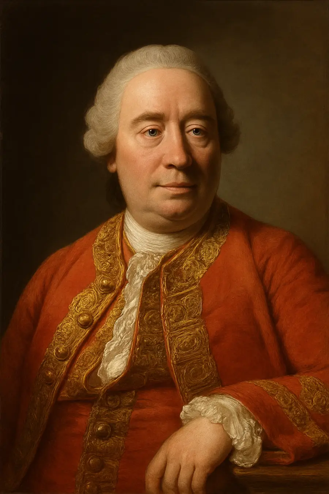
En kort presentasjon
Hvem var David Hume?
Født: 1711 i Edinburgh, Skottland
Død: 1776
En av de mest innflytelsesrike skikkelsene i den skotske opplysningstiden
Filosof, historiker, økonom og essayist
Sentrale filosofiske ideer
Empirisme
All kunnskap kommer fra sanseerfaring.
Han avviser medfødte ideer.
Skeptisisme
Han tviler på at vi kan være sikre på årsakssammenhenger, selvet og Gud.
Han spurte berømt om vi noen gang virkelig kan vite noe om årsak og virkning.
Induksjonsproblemet
At solen har stått opp hver dag, er ingen garanti for at den står opp i morgen.
Han utfordrer antakelsen vår om at fremtiden vil ligne fortiden.
Teorien om selvet
Selvet er en «bunt av persepsjoner». Det finnes ingen fast, uforanderlig identitet.
Moral og følelse
Moralske vurderinger springer ut av følelser, ikke av fornuften.
«Fornuften er, og bør bare være, lidenskapenes slave.»
Ettermæle
Han fikk stor innflytelse på Immanuel Kant, moderne psykologi, etikk og vitenskapsfilosofi.
Han studeres fortsatt i dag for sine radikale angrep på visshet og rasjonalisme.
Analyse av Humes induksjonsproblem
Definisjon og kjerneidé
Induksjonsproblemet, slik David Hume formulerte det, stiller spørsmål ved det logiske grunnlaget for å anta at fremtiden vil ligne fortiden.
Det avdekker et hull i resonnementet vårt når vi forutsier fremtidige hendelser bare ut fra tidligere erfaringer.
Hovedinnsikt
At solen har stått opp hver dag hittil, garanterer ikke logisk sett at den står opp i morgen.
Hume hevder at troen vår på årsak og virkning, for eksempel forventningen om at solen skal stå opp, ikke bygger på fornuft. Den bygger på vane.
Vi ser regelmessighet i naturen, venner oss til den og begynner å forvente den. Men denne forventningen er ikke logisk nødvendig.
Antakelser som utfordres
Naturens ensartethet
Vi antar at naturen oppfører seg likt over tid. Hume spør: Hvorfor det?
Det finnes ikke noe rasjonelt bevis for at naturen må forbli ensartet.
Årsaksslutninger
Vi tror at hendelse A forårsaker hendelse B fordi de alltid opptrer sammen.
Men alt vi observerer, er samvariasjon. Vi ser aldri en nødvendig forbindelse.
Hvorfor dette er viktig
Vitenskapen bygger på induksjon: observasjoner fører til generelle lover, som igjen gir forutsigelser.
Humes problem viser at slike resonnementer mangler visshet. De er sannsynlige, ikke nødvendige.
Konsekvenser og ettervirkninger
Problemet rokker ved grunnlaget for empirisk vitenskap. Det inspirerte senere tenkere og retninger:
Immanuel Kant, som prøvde å løse det ved å hevde at sinnet selv gir erfaringen dens struktur.
Karl Popper, som la vekt på falsifiserbarhet fremfor verifikasjon.
Moderne erkjennelsesteori, som utforsker sannsynlighetsresonnering og bayesiansk slutning som svar på problemet.
Konklusjon
Humes induksjonsproblem er en kraftig filosofisk utfordring: Vi kan ikke rasjonelt begrunne tilliten vår til at det som alltid har skjedd, vil fortsette å skje.
Det tvinger oss til å innrømme at vissheten vår, både i vitenskapen og i hverdagen, ofte ikke bygger på logikk, men på vane og psykologisk forventning.
Filosofen David Hume spør
Tar du ting for gitt?
Tror du at det som skjer i dag, vil gjenta seg i morgen?
Jean-Jacques Rousseau påvirket demokratisk tenkning, romantikken og til og med moderne psykologi. Tanken hans om at «folkets vilje» er hellig, lever videre i dagens demokratier.
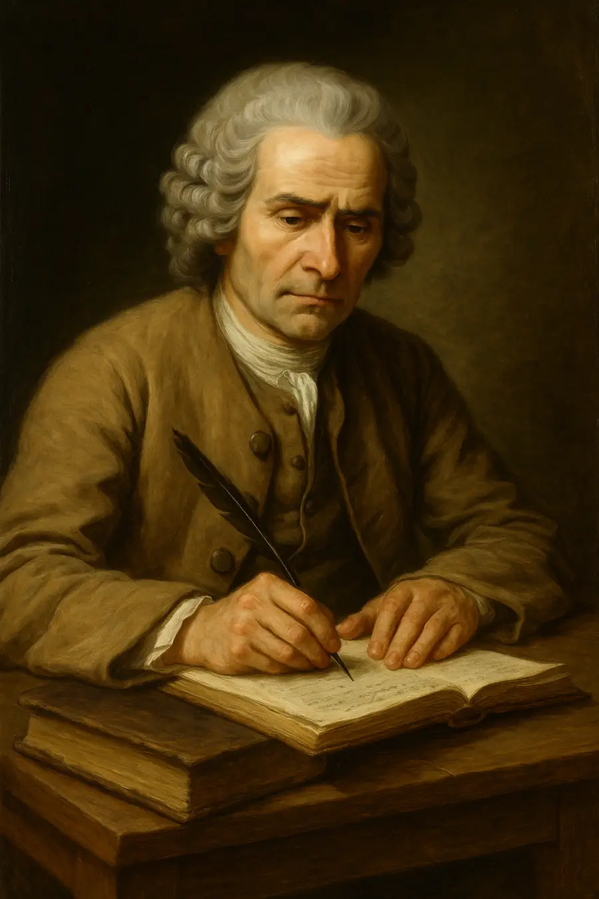
«Menneskets største fiende er mennesket selv.» – Rousseau
En kort presentasjon
Jean-Jacques Rousseau (1712–1778) var en sveitsisk-fransk filosof, forfatter og komponist, og en av opplysningstidens mest innflytelsesrike tenkere.
Sentrale ideer
Menneskets natur
Mennesket er i utgangspunktet godt, men blir ødelagt av samfunnet.
Samfunnspakten (1762)
«Mennesket er født fritt, og overalt ligger det i lenker.»
Han foreslår et samfunn bygd på folkets vilje, «la volonté générale» (allmennviljen).
Barneoppdragelse (Émile, 1762)
Barn bør få utvikle seg fritt og i takt med sin egen natur, ikke formes etter kunstige normer.
Musikk og estetikk
Han forsvarte folkemusikken og følelsene mot den rasjonelle estetikken til samtidens klassiske komponister.
Betydning
Han påvirket den franske revolusjon, det moderne demokratiet og pedagogikken.
Han var en forløper for romantikken, med vekt på følelser, natur og individualitet.
Viktige verk
Émile, eller om oppdragelsen (1762)
Samfunnspakten (1762)
Bekjennelser (utgitt etter hans død)
Avhandling om ulikheten (1755)
Hvor han bodde
Rousseau bodde mange steder i løpet av livet, ofte på flukt fra forfølgelse på grunn av sine radikale ideer. Her er noen av de viktigste:
1. Genève, Sveits (født 1712)
Fødebyen hans. Han ble født som borger av republikken Genève.
2. Torino, Italia
Som ung konverterte han til katolisismen og bodde en kort tid i Italia.
3. Paris, Frankrike
Han flyttet hit i 1742 og ble kjent i opplysningsmiljøet sammen med Diderot, Voltaire og andre.
4. Montmorency (ved Paris)
En viktig skriveperiode (1756–1762). Her skrev han blant annet Émile og Samfunnspakten.
5. Sveits (Môtiers, Neuchâtel, 1762–1765)
Han flyktet etter at Émile ble bannlyst i Frankrike. Også i Sveits møtte han motstand.
6. England (1766–1767)
Han takket ja til en invitasjon fra David Hume og bodde i Wootton, men forholdet til Hume surnet.
7. Tilbake i Frankrike (1767–1778)
I perioder levde han i skjul. Til slutt fikk han tillatelse til å vende tilbake til Paris.
8. Ermenonville, Frankrike (død 1778)
Han tilbrakte de siste månedene sine hos markien de Girardin, og døde her.
Immanuel Kant la grunnlaget for mye av den moderne filosofien. Ideene hans har satt spor i alt fra politisk teori til estetikk.
Kort presentasjon av Immanuel Kant
Immanuel Kant (1724–1804) var en tysk filosof og en av de mest innflytelsesrike tenkerne i vestlig filosofi. Han ble født i Königsberg i Preussen (i dag Kaliningrad i Russland), og der bodde han hele livet, som lærer og forfatter.
Kant er mest kjent for sitt arbeid innen erkjennelsesteori, etikk og metafysikk.
Hovedverket hans, Kritikk av den rene fornuft (1781), revolusjonerte måten vi forstår kunnskap og erfaring på. Han hevdet at vår forståelse av verden ikke bare formes av sanseinntrykk, men også av måten sinnet vårt strukturerer disse inntrykkene på.
Innen etikken utviklet Kant begrepet det kategoriske imperativ, en allmenngyldig moralsk lov basert på fornuften. Han mente at moralske handlinger må springe ut av plikt og kunne gjelde for alle. De skal ikke bygge på konsekvenser.
Kants filosofi kalles ofte transcendental idealisme. Den går ut på at vi aldri kan kjenne tingene slik de er i seg selv (das Ding an sich), bare slik de fremstår for oss.
Mary Wollstonecraft var en engelsk forfatter, filosof og forkjemper for kvinners rettigheter. Hun levde i opplysningstiden og regnes som en av grunnleggerne av den moderne feminismen.
En pioner for feministisk tenkning
Hvem var hun?
Hovedverk
A Vindication of the Rights of Woman (1792)
I denne banebrytende boken hevdet Wollstonecraft at kvinner ikke er underlegne menn av natur. De virker bare slik fordi de mangler utdanning.
Hun krevde like rettigheter og muligheter for kvinner, særlig innen utdanning og samfunnsliv.
Sentrale ideer
Kvinner skal behandles som fornuftige vesener.
Utdanning er veien til likestilling.
Ekteskapet bør være et partnerskap mellom likeverdige.
Et rettferdig samfunn må regne med kvinner som moralske og politiske aktører.
Ettermæle
Hun inspirerte senere feministiske bevegelser.
Hun påvirket filosofer, forfattere og politiske tenkere.
Hun var mor til Mary Shelley, forfatteren av Frankenstein.
G.W.F. Hegel la grunnlaget for marxismen, eksistensialismen, kritisk teori og moderne politisk filosofi. Tenkere som Karl Marx, Kierkegaard og Adorno ble dypt preget av ham, enten de bygde videre på tankene hans eller reagerte mot dem.
Georg Wilhelm Friedrich Hegel (1770–1831) var en tysk filosof og en av de mest innflytelsesrike skikkelsene i vestlig filosofi. Han er mest kjent for sitt arbeid innen tysk idealisme, særlig for utviklingen av dialektisk tenkning.
Sentrale ideer
Dialektikk
Historien og ideene utvikler seg gjennom en prosess i tre trinn:
Tese → antitese → syntese
Metoden forklarer hvordan motsetninger blir løst etter hvert som tanken og virkeligheten utvikler seg.
Den absolutte ånd
Hegel mente at hele virkeligheten er uttrykk for én enkelt, fornuftig prosess, som han kalte det absolutte. Det absolutte blir seg selv bevisst gjennom menneskets historie, kunst, religion og filosofi.
Åndens fenomenologi (1807)
Et hovedverk som følger bevissthetens utvikling fra sanseerfaring til absolutt viten.
Historiefilosofi
Han hevdet at historien er fornuftig og følger en logisk utvikling der friheten vokser over tid.
Innflytelse
Hegels ideer la grunnlaget for marxismen, eksistensialismen, kritisk teori og moderne politisk filosofi.
Tenkere som Karl Marx, Kierkegaard og Adorno ble dypt preget av tankene hans, enten de bygde videre på dem eller reagerte mot dem.
Hegels mest kjente sitater
«Det virkelige er fornuftig, og det fornuftige er virkelig.»
Virkelighet og fornuft er to sider av samme sak i Hegels system.
«Det vi lærer av historien, er at vi ikke lærer av historien.»
En kraftfull kritikk av menneskehetens tilbøyelighet til å gjenta sine feil.
«Bare én mann har noen gang forstått meg, og han forsto meg ikke.»
En selvbevisst kommentar om hvor komplisert filosofien hans er.
«Friheten er åndens sannhet.»
Hegel så menneskets frihet som det endelige målet for historien og ånden.
«Å være uavhengig av den offentlige mening er den første formelle betingelsen for å oppnå noe stort.»
En oppfordring til mot i tanke og handling.
«Ekte tragedier i verden er ikke konflikter mellom rett og galt. De er konflikter mellom to retter.»
Hegels innsikt i hvor sammensatt moralen er.
«En idé er alltid en generalisering, og generalisering er en egenskap ved tenkningen. Å generalisere betyr å tenke.»
Arthur Schopenhauer var pessimismens og viljens tyske filosof. Han vokste opp i en velstående kjøpmannsfamilie i Danzig og ble påvirket av Platon, Kant og østlig filosofi, særlig buddhisme og hinduisme.
Pessimismens og viljens tyske filosof
Arthur Schopenhauer (1788–1860)
Bakgrunn
Født i Danzig (i dag Gdańsk i Polen) og oppvokst i en velstående kjøpmannsfamilie.
Påvirket av Platon, Kant og østlig filosofi, særlig buddhisme og hinduisme.
Sentrale ideer
Viljen som tingen i seg selv
For Schopenhauer er den grunnleggende virkeligheten bak alt verken fornuften eller Gud. Det er en blind, irrasjonell kraft som han kaller viljen.
Viljen driver hele tilværelsen, fra menneskelig begjær til prosesser i naturen.
Pessimisme
Livet er fullt av lidelse, fordi begjæret, som drives av viljen, aldri blir helt tilfredsstilt.
Lykke er bare fravær av smerte, ikke en varig tilstand.
Flukt gjennom kunsten
Kunsten, og særlig musikken, gir en midlertidig flukt fra verdens lidelse.
I øyeblikk av kunstnerisk kontemplasjon blir vi et kort øyeblikk satt fri fra viljen.
Medfølelse og etikk
Moralen springer ut av Mitleid (medfølelse), ikke av plikt eller regler.
Når vi ser oss selv i andre, fører det til vennlighet og etisk handling.
Påvirkning fra østlig tenkning
Schopenhauer beundret buddhismens tanke om løsrivelse og nirvana.
Han mente at å fornekte viljen var veien til indre fred, noe som ligner den buddhistiske oppvåkningen.
Ettermæle
Schopenhauer ble stort sett oversett tidlig i karrieren, men fikk senere innflytelse på tenkere og kunstnere som Nietzsche, Freud, Wagner og Tolstoj.
Han regnes som en bro mellom klassisk tysk filosofi og eksistensialismen.
John Stuart Mill var en av 1800-tallets mest innflytelsesrike britiske filosofer og politiske tenkere. Han er mest kjent for arbeidet sitt om frihet, utilitarisme og individets rettigheter.
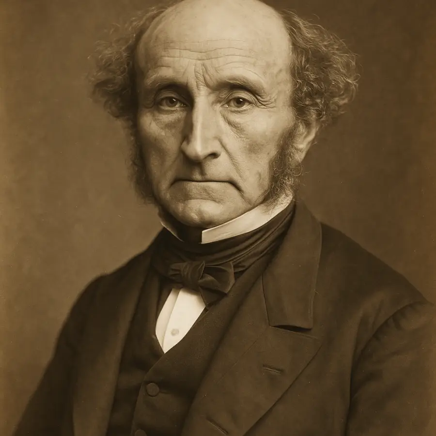
Kort presentasjon av John Stuart Mill
Navn: John Stuart Mill
Født: 20. mai 1806 i London, England
Død: 8. mai 1873 i Avignon, Frankrike
Fagfelt: Filosofi, politisk økonomi og etikk
Han var et vidunderbarn som ble undervist av faren, James Mill, og påvirket av Jeremy Bentham. Mill ble en ledende stemme i liberal tenkning.
I Om friheten (1859) argumenterte Mill for å beskytte individets frihet mot flertallets tyranni. Han mente at folk skal stå fritt til å handle som de vil, så lenge handlingene ikke skader andre. Dette «skadeprinsippet» er fortsatt en hjørnestein i liberal demokratisk teori.
I Utilitarismen (1863) videreutviklet han Benthams filosofi ved å legge vekt på kvalitative forskjeller mellom ulike former for nytelse. Han hevdet at intellektuelle og moralske gleder står over ren fysisk tilfredsstillelse.
Mill kjempet også for kvinners rettigheter. I det berømte verket Kvinnenes underkuelse (1869) argumenterte han for juridisk og sosial likestilling mellom kjønnene, et fremskutt standpunkt i hans samtid.
Hans økonomiske skrifter og støtte til politiske reformer gjorde ham til et respektert parlamentsmedlem og en utrettelig forkjemper for fremskritt, fornuft og sosial rettferdighet.
Ettermæle
John Stuart Mill la det filosofiske grunnlaget for moderne liberalisme. Han påvirker fortsatt politisk filosofi, etikk og debatten om menneskerettigheter.
Sitater
Her er noen av John Stuart Mills mest kjente og innsiktsfulle sitater.
Om frihet og individuell frihet
«Den eneste frihet som fortjener navnet, er friheten til å søke vårt eget gode på vår egen måte.» Om friheten (1859)
«Et menneske kan gjøre andre vondt, ikke bare gjennom sine handlinger, men også gjennom sin passivitet.» Om friheten
Om sannhet og åpen debatt
«En stats verdi er i det lange løp verdien av de individene den består av.»
«Det særlig onde ved å bringe en mening til taushet er at det frarøver menneskeheten noe … Hvis meningen er riktig, fratas de muligheten til å bytte villfarelse mot sannhet.» Om friheten
Om utdanning og vekst
«Geniet kan bare puste fritt i en atmosfære av frihet.»
«Originalitet er det ene som uoriginale sinn ikke kan se nytten av.»
Om utilitarisme og etikk
«En sjels verdi måles ikke etter sannheten den kjenner, men etter innsatsen den gjør for å nå sannheten.»
«Den læren som godtar nytte, eller prinsippet om størst mulig lykke, som moralens grunnlag, hevder at handlinger er riktige i den grad de har en tendens til å fremme lykke.» Utilitarismen (1863)
Om kvinners rettigheter
«Den juridiske underordningen av det ene kjønn under det andre er gal i seg selv, og nå et av de største hindrene for menneskehetens fremgang.» Kvinnenes underkuelse (1869)
Karl Marx ble født i Trier i Preussen i 1818 og døde i London i 1883. Han var filosof, økonom, historiker, sosiolog, politisk teoretiker og journalist.
Karl Marx: en kort presentasjon
1. Hvem var Karl Marx?
Født: 5. mai 1818 i Trier, Preussen (i dag Tyskland)
Død: 14. mars 1883 i London, England
Yrke: Filosof, økonom, historiker, sosiolog, politisk teoretiker og journalist
2. Hovedideer
Historisk materialisme: Historien drives fram av materielle forhold og klassekamp.
Klassekamp: Samfunnet utvikler seg gjennom konflikt mellom klasser, først og fremst mellom borgerskapet (kapitalistklassen) og proletariatet (arbeiderklassen).
Fremmedgjøring: Under kapitalismen blir arbeiderne fremmedgjort fra produktene av sitt eget arbeid, fra seg selv og fra andre.
Revolusjon: Han mente at kapitalismen til slutt ville bli styrtet av en proletarisk revolusjon, som ville føre til et klasseløst og statsløst kommunistisk samfunn.
3. Viktige verk
Kommunistisk manifest (1848, sammen med Friedrich Engels): Et kamprop til verdens arbeidere.
Kapitalen (bind I, 1867): En kritisk analyse av kapitalismen og dens dynamikk.
4. Ettermæle
Grunnleggeren av marxistisk teori.
Påvirket store politiske bevegelser, revolusjoner og ideologier gjennom hele 1900-tallet, for eksempel sosialisme og kommunisme.
Studeres fortsatt i filosofi, økonomi, sosiologi og statsvitenskap i dag.
Karl Marx: de beste sitatene
1. Om revolusjon og forandring
«Filosofene har bare fortolket verden på forskjellige måter; det det kommer an på, er å forandre den.» Teser om Feuerbach (1845)
2. Om kapitalismen
«Hele det hittidige samfunns historie er klassekampens historie.» Kommunistisk manifest (1848)
3. Om arbeid og fremmedgjøring
«Arbeideren blir desto fattigere jo mer rikdom han produserer.» Økonomisk-filosofiske manuskripter (1844)
4. Om frihet
«Den enkeltes frie utvikling er betingelsen for alles frie utvikling.» Kommunistisk manifest (1848)
5. Om religion
«Religionen er folkets opium.» Til kritikken av Hegels rettsfilosofi (1843)
6. Om kapitalen
«Kapitalen er dødt arbeid, som i likhet med en vampyr bare lever ved å suge levende arbeid, og som lever desto mer jo mer arbeid den suger.» Kapitalen (1867)
7. Om historien
«Menneskene skaper sin egen historie, men de skaper den ikke slik de selv vil.» Louis Bonapartes attende brumaire (1852)
Friedrich Nietzsche (1844–1900) utfordret tradisjonelle religiøse og filosofiske systemer. Han erklærte berømt at «Gud er død», som en kritikk av troens forfall i den moderne verden.
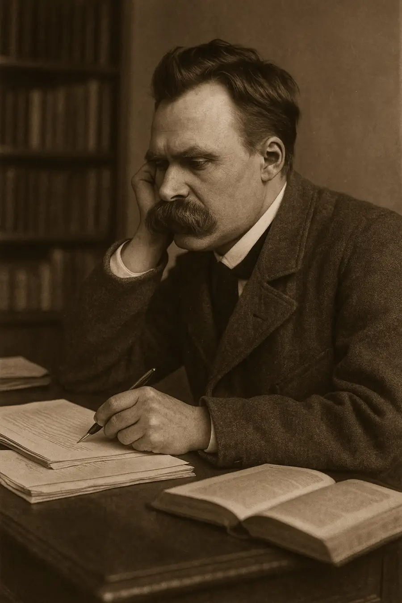
Kort om Friedrich Nietzsche
Friedrich Nietzsche (1844–1900) var en tysk filosof, kulturkritiker, poet og filolog. Han er mest kjent for sine dype og provoserende tanker om moral, sannhet, kunst, makt og tilværelsens natur.
Han introduserte flere kraftfulle begreper:
Overmennesket (Übermensch): et idealmenneske som skaper sine egne verdier.
Viljen til makt: en grunnleggende drivkraft bak menneskelig atferd.
Den evige gjenkomst: tanken om at livet kanskje gjentar seg i det uendelige, og at man bør leve som om man skulle gjenoppleve det samme livet om og om igjen.
Nietzsches stil var poetisk, aforistisk og ofte ironisk. Blant hovedverkene hans er Slik talte Zarathustra, Hinsides godt og ondt og Tragediens fødsel.
Han var omstridt i sin samtid, men tenkningen hans har hatt varig innflytelse på filosofi, psykologi, litteratur og eksistensialisme.
Sitater
Her er noen av Friedrich Nietzsches mest kjente og tankevekkende sitater.
«Gud er død. Gud forblir død. Og vi har drept ham.»
Fra Den glade vitenskap (1882). En metafor for den tradisjonelle religionens forfall og fremveksten av en sekulær modernitet.
«Den som har et hvorfor å leve for, kan tåle nesten ethvert hvordan.»
Fra Avgudenes ragnarok (1889). Understreker hvor viktig det er å ha et formål når man skal holde ut lidelse.
«Det som ikke dreper oss, gjør oss sterkere.»
Fra Avgudenes ragnarok (1889). Et populært sitat om motstandskraft og om å vokse gjennom motgang.
«Det finnes ingen fakta, bare tolkninger.»
Fra notatbøkene. En radikal påstand om sannhet og subjektivitet.
«Den som kjemper mot monstre, må passe på at han ikke selv blir et monster.»
Fra Hinsides godt og ondt (1886). En advarsel mot å miste det moralske kompasset i kampen mot det onde.
«Og hvis du stirrer lenge nok ned i en avgrunn, stirrer avgrunnen tilbake i deg.»
Fra Hinsides godt og ondt (1886). En poetisk refleksjon over farene ved å konfrontere mørket.
«Individet har alltid måttet kjempe for ikke å bli overmannet av stammen.»
Oppfordrer til individualisme og motstand mot konformitet.
Ludwig Wittgenstein (1889–1951) var en østerriksk-britisk filosof, og regnes som en av de mest innflytelsesrike tenkerne i det 20. århundre. Han preget språkfilosofien, logikken og bevissthetsfilosofien på en grunnleggende måte.
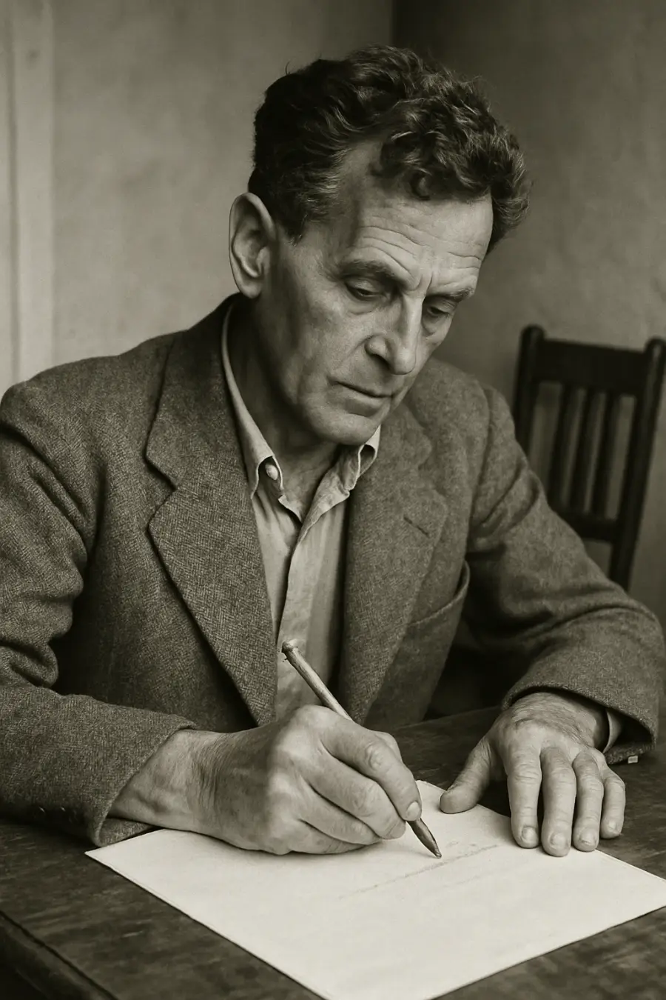
Hvem var han?
Ludwig Wittgenstein (1889–1951) var en østerriksk-britisk filosof. Han regnes bredt som en av de mest innflytelsesrike tenkerne i det 20. århundre.
To hovedperioder i filosofien hans
Den tidlige Wittgenstein: Tractatus Logico-Philosophicus (1921)
Wittgenstein hevdet at språkets struktur speiler virkelighetens struktur. Han mente at meningsfulle utsagn må kunne avbildes logisk.
Det som overhodet kan sies, kan sies klart. Om resten må man tie.
Den sene Wittgenstein: Filosofiske undersøkelser (utgitt posthumt i 1953)
Her tok han avstand fra mye av sitt tidligere arbeid. Han lanserte ideen om at et ords betydning ligger i bruken av det.
Språket består av en rekke «språkspill» som er forankret i livsformer. Dermed løftet han frem de sosiale og praktiske sidene ved kommunikasjon.
Ettermæle
Wittgensteins arbeid har påvirket filosofi, lingvistikk, psykologi og kognitiv vitenskap.
Overgangen hans fra logisk formalisme til analyse av hverdagsspråket markerte et vendepunkt i den analytiske filosofien.
Sitater
Her er noen av Ludwig Wittgensteins mest kjente og tankevekkende sitater.
Om språk og tanke
«Grensene for mitt språk betyr grensene for min verden.»
Tractatus Logico-Philosophicus, 1921. Dette er kanskje hans mest berømte utsagn.
Om mening
«Mening er bruk.»
Filosofiske undersøkelser, 1953.
Om taushet
«Det man ikke kan tale om, må man tie om.»
Tractatus Logico-Philosophicus, siste setning.
Om visshet
«Hvis du vet at her er én hånd, så innrømmer vi deg alt det andre.»
Om visshet, utgitt posthumt.
Om filosofi
«Filosofi er ikke en lære, men en virksomhet.»
Om klarhet
«Ikke la deg rote inn i delproblemer, men søk alltid opp dit hvor du har fri utsikt over hele det ene, store problemet.»
Martin Heidegger (1889–1976) var en av de mest innflytelsesrike og omstridte filosofene i det 20. århundre. Arbeidet hans forandret hvordan vi tenker om væren, tid og menneskelig eksistens.
Væren (Sein): Heidegger mente at den vestlige filosofien hadde glemt det grunnleggende spørsmålet: Hva vil det si å være? Han ville vekke dette spørsmålet til live igjen.
Dasein: Et begrep han brukte om menneskets måte å være på, ordrett «å være der». Dasein er et vesen som kan stille spørsmål ved sin egen eksistens.
Væren-til-døden: Mennesket er bevisst sin egen dødelighet, og denne bevisstheten former hvordan vi kan leve autentisk.
Kastethet (Geworfenheit): Vi er «kastet» inn i en verden vi ikke har valgt selv, der språk, kultur og historie allerede finnes.
Teknikk: I senere verk advarte Heidegger mot det moderne teknologiske verdensbildet, som behandler alt, også mennesker, som rene ressurser.
Innflytelse
Heideggers ideer fikk stor betydning for eksistensialismen (for eksempel Sartre), hermeneutikken (for eksempel Gadamer) og postmodernismen (for eksempel Foucault og Derrida).
Han er fortsatt en sentral skikkelse i kontinental filosofi.
Kontrovers
Heideggers engasjement i nazistpartiet på 1930-tallet er fortsatt gjenstand for intens debatt og kritikk.
Sitater
Om væren
«Spørsmålet om væren er filosofiens mest grunnleggende spørsmål.»
Væren og tid, 1927.
Om menneskets eksistens (Dasein)
«Mennesket er ikke herre over det værende. Mennesket er værens hyrde.»
Brief über den Humanismus (Brev om humanismen), 1947.
Om teknikk
«Teknikkens vesen er slett ikke noe teknisk.»
Die Frage nach der Technik (Spørsmålet om teknikken), 1954.
Om autentisitet og død
«Bare et vesen som bekymrer seg for sin egen væren, kan føle angst.»
Væren og tid.
«Døden er muligheten for Daseins absolutte umulighet.»
Om språk
«Språket er værens hus. I dets hjem bor mennesket.»
Brief über den Humanismus (Brev om humanismen).
Om tenkning
«Det mest tankevekkende i vår tankevekkende tid er at vi fremdeles ikke tenker.»
Hannah Arendt (1906–1975) var en tyskfødt politisk tenker, kjent for sine dype analyser av makt, ondskap og menneskets vilkår. Hun flyktet fra Nazi-Tyskland og slo seg ned i USA, der hun ble en av de ledende intellektuelle stemmene i det 20. århundre.
Kort om Hannah Arendt
Navn: Hannah Arendt
Født: 14. oktober 1906 i Hannover, Tyskland
Død: 4. desember 1975 i New York, USA
Hovedinteresser: politisk filosofi, totalitarisme, autoritet, frihet, ansvar
Hvem var Hannah Arendt?
Hannah Arendt var en tyskfødt politisk tenker, kjent for sine dype analyser av makt, ondskap og menneskets vilkår.
Hun flyktet fra Nazi-Tyskland og slo seg ned i USA. Der ble hun en av de ledende intellektuelle stemmene i det 20. århundre.
Hovedverk
Totalitarismens opprinnelse (1951): En banebrytende analyse av nazismen og stalinismen.
Vita activa: Det virksomme liv (1958): Undersøker menneskelig virksomhet, det vil si arbeid, framstilling og handling, og hvor viktig det politiske livet er.
Eichmann i Jerusalem (1963): Her lanserte hun den omstridte ideen om «ondskapens banalitet», basert på reportasjene hennes fra rettssaken mot Adolf Eichmann.
Sentrale ideer
Totalitarisme: En ny styreform som søker total kontroll over alle sider av livet.
Ondskapens banalitet: Ondskap kan begås av helt vanlige mennesker som følger ordre uten kritisk tenkning eller moralsk refleksjon.
Vita activa: Menneskelivet er definert av handling, tale og pluralitet, altså vår evne til å handle sammen i et offentlig rom.
Retten til å ha rettigheter: En radikal oppfordring til universelle menneskerettigheter som går ut over nasjonalstaten.
Ettermæle
Hannah Arendt er fortsatt en av de mest innflytelsesrike politiske tenkerne i moderne tid.
Innsiktene hennes preger fremdeles debatter om autoritære tendenser, moralsk ansvar og hvor skjøre de demokratiske institusjonene er.
Sitater
Her er noen av Hannah Arendts sterkeste og mest varige sitater. De uttrykker hennes filosofiske hovedanliggender: politikk, ondskap, ansvar og frihet.
Om ondskap og ansvar
«Den triste sannheten er at det meste av ondskap blir begått av mennesker som aldri bestemmer seg for å være gode eller onde.»
Fra The Life of the Mind.
«Ondskap kommer av manglende tenkning. Den trosser tanken, for så snart tanken prøver å gripe ondskapen og undersøke premissene og prinsippene den springer ut av, blir den frustrert.»
En refleksjon over Adolf Eichmann, i Eichmann i Jerusalem.
«Under tyranni er det langt lettere å handle enn å tenke.»
Om frihet og politikk
«Den mest radikale revolusjonære blir konservativ dagen etter revolusjonen.»
«Politiske spørsmål er altfor alvorlige til å overlates til politikerne.»
«Maktens vesen er handlingens spontanitet og evnen til å begynne på nytt.»
Om menneskelig pluralitet og offentlig liv
«Pluralitet er betingelsen for menneskelig handling, fordi vi alle er like, det vil si mennesker, på en slik måte at ingen noen gang er lik noen andre som har levd, lever eller kommer til å leve.»
Fra Vita activa: Det virksomme liv.
«Fortellingen avdekker mening uten å begå den feilen å definere den.»
Om rettigheter og rettferdighet
«Retten til å ha rettigheter»
Et begrep hun introduserte i Totalitarismens opprinnelse. Det viser til den mest grunnleggende menneskeretten: retten til å tilhøre et politisk fellesskap.
Simone de Beauvoir (1908–1986) skrev den banebrytende boken Det annet kjønn (1949), som la grunnlaget for moderne feminisme. Hun var en ledende skikkelse i eksistensialismen, side om side med Jean-Paul Sartre, og kjempet for kvinners frihet, selvstendighet og likestilling.
Hvem var hun?
Født: 9. januar 1908 i Paris, Frankrike
Død: 14. april 1986
Simone de Beauvoir var en fransk forfatter, filosof og feminist.
Viktigste bidrag
Skrev den banebrytende boken Det annet kjønn (1949), som la grunnlaget for moderne feminisme.
Var en ledende skikkelse i eksistensialismen, side om side med Jean-Paul Sartre.
Kjempet for kvinners frihet, selvstendighet og likestilling.
Filosofi
Hun er kjent for tanken:
«Man fødes ikke som kvinne, man blir det.»
Hun undersøkte hvordan samfunnet konstruerer kjønnsroller.
Hun la vekt på individets frihet og ansvar.
Ettermæle
Hun inspirerte feministiske bevegelser over hele verden.
Hun påvirker fortsatt filosofi, litteratur og kjønnsforskning.
Hun huskes som en kraftfull stemme for frigjøring og menneskerettigheter.
Marshall McLuhan (1911–1980) var en kanadisk filosof, medieteoretiker og pedagog. Han er mest kjent for sine banebrytende teorier om hvordan medier påvirker samfunnet og menneskers tenkning.
McLuhan lanserte begreper som «mediet er budskapet» og «den globale landsbyen». Han hevdet at det er selve mediet, og ikke innholdet det formidler, som former menneskets bevissthet og kultur.
Han var en visjonær tenker som forutså mange av virkningene av elektroniske medier, også internett, lenge før de ble utbredt.
Mediet er budskapet
«Mediet er budskapet.»
Dette er McLuhans mest berømte utsagn. Det betyr at selve mediet (for eksempel boka, TV-en, radioen eller internett) påvirker oss sterkere enn innholdet som formidles gjennom det.
Hva han mente
Et medium er mer enn en kanal for informasjon. Det former måten vi tenker, føler og lever på.
En bok handler for eksempel ikke bare om teksten, men om hva bokmediet gjør med oss. Den fremmer lineær, logisk tenkning, og den styrker individuell refleksjon og privat lesing.
TV ses derimot gjerne sammen, krever mindre aktiv deltakelse og skaper en helt annen rytme, oppmerksomhet og sosial situasjon enn en bok.
Eksempler
Lyspæra: En elektrisk lyspære har egentlig ikke noe «innhold», men den endrer likevel hvordan folk lever. Den gjør natt til dag og muliggjør moderne arbeidsrytmer. Lyspæra er dermed et medium som er sitt eget budskap.
Smarttelefonen: Den endrer både tempo, relasjoner og konsentrasjon, uansett om du leser nyheter eller spiller et spill. Selve det at du alltid er tilgjengelig, er budskapet.
Internett og sosiale medier: Det er ikke bare hva vi deler, men det at vi alltid er koblet på, som endrer vår forståelse av tid, politikk og hvordan fellesskap oppstår.
Konsekvensene
McLuhan ville vise at teknologier og medier påvirker:
Sansene våre: hva vi fester oss ved, og hva vi overser.
De sosiale strukturene våre: familie, skole og politikk.
Bevisstheten og kulturhistorien vår: fra muntlig kultur via boktrykkerkunsten og elektroniske medier til digitale medier.
Innholdet (nyheten, filmen, teksten) kan med andre ord virke viktig her og nå. Men det er selve mediet som virkelig former oss, dypere og på lengre sikt.
Den globale landsbyen
Hva han mente med begrepet
McLuhan lanserte begrepet på 1960-tallet for å beskrive hvordan elektroniske medier (radio og TV, og i dag internett) skaper en verden der avstand og tid nesten forsvinner.
I et tradisjonelt landsbysamfunn vet alle det meste om hverandre, fordi informasjon sprer seg raskt og tett.
McLuhan mente at moderne medier gjør noe lignende i global skala. Hendelser kan oppleves samtidig, og alle får straks vite hva som skjer, uansett hvor det skjer.
Kjennetegn ved den globale landsbyen
Samtidighet: Nyheter, kriser og feiringer utspiller seg «direkte» foran øynene våre. Når det er jordskjelv i Japan eller valg i USA, ser folk det i sanntid over hele verden.
Nærhet: Mediene skaper en følelse av at fjerne steder og mennesker er nær oss, som naboer i et landsbysamfunn.
Kulturutveksling: Musikk, memer, ideer og trender sirkulerer globalt i rekordfart.
Sosiale reaksjoner: Akkurat som i en landsby kan små handlinger forstørres enormt og utløse en kollektiv reaksjon. Tenk på virale videoer eller storm på Twitter/X.
Eksempler i dag
Internett har gjort McLuhans spådommer til virkelighet. TikTok-danser, globale protestbevegelser (klima, #MeToo) og idrettsarrangementer samler hele verden i det samme «rommet».
Sosiale medier lar privatliv og offentlighet flyte sammen, som i et landsbysamfunn der «alle ser alt».
Global økonomi og politikk: En krise i ett land kan umiddelbart påvirke markeder og levekår på andre kontinenter.
Både positivt og negativt
Positivt: Den globale landsbyen kan skape fellesskap, empati og samarbeid på tvers av kulturer.
Negativt: Den kan føre til overvåking, massehysteri, «mobbmentalitet» eller informasjonsoverbelastning, fordi vi aldri kan «rømme fra landsbyen».
Et enkelt bilde:
«Den globale landsbyen er som om hele verden har blitt ett nabolag der alle vinduene står åpne. Du kan se inn til naboen på den andre siden av kloden, men alle kan også se inn til deg.»
Michel Foucault (1926–1984) var en fransk filosof, historiker og samfunnsteoretiker, kjent for sine dype analyser av makt, kunnskap og forholdet mellom dem.
Han forbindes ofte med poststrukturalismen. Tenkningen hans har påvirket en rekke fagfelt, blant annet filosofi, sosiologi, kulturstudier og kritisk teori.
Makt, institusjoner og det normale
Foucault undersøkte hvordan institusjoner (som fengsler, sykehus og asyler) og diskurser former vår forståelse av normalitet, galskap, seksualitet og identitet.
Han er særlig kjent for å vise hvordan makt ikke bare virker gjennom lover og myndigheter, men også gjennom hverdagslige praksiser og kunnskapssystemer.
Viktige verk
Blant hans viktigste verk er Galskapens historie, Overvåkning og straff og Seksualitetens historie.
Foucault utfordret ideen om en objektiv sannhet. Han la i stedet vekt på at sannhet blir produsert innenfor maktforhold.
Hvorfor lese Foucault?
Tenkningen hans oppfordrer oss til å stille spørsmål ved hvordan samfunnet vårt definerer hva som er «normalt», hvem som har autoritet, og hvordan historiske sammenhenger former måten vi tenker på.
BLOGG
Små undringer fra verkstedet
Her skriver vi om hvordan Giati blir til: figurene, bøkene og spørsmålene vi stiller underveis.
Hvorfor heter det Giati?
Giati er gresk og betyr «hvorfor». Det er det minste og viktigste spørsmålet et barn stiller, og det er derfor vi valgte det som navn.
Hver film og bok følger det samme mønsteret: først et spørsmål (?), så undersøker vi sammen, og til slutt forstår vi noe nytt (!). I fortellingene er Giati også en svart katt som vet alt, og som blir med Pika gjennom alt det nye.
Vi tror ikke et godt spørsmål er verdt mindre enn et godt svar. Derfor har vi laget et sted der det er lov å lure.
OM GIATI
Alt starter med «hvorfor?»
Giati lager filmer, bilder og bøker som vekker nysgjerrighet hos barn, ungdom og voksne.
Hva vi gjør
Vi lager og publiserer film og video: læringsfilmer, animasjon, kortfilm og dokumentar.
Vi lager og selger bilder og illustrasjoner, som trykk, plakater og digitale filer.
Vi gir ut bøker, både på papir og digitalt.
Vi utvikler egne figurer og fortellinger. Etter hvert kan de bli til lisenser og varer.
Figurene
Pika kommer fra rommet og lurer på alt.
Giati er den svarte katten som vet alt, og som blir med Pika.
Tiniak bor i skogen og viser hemmelighetene vi går forbi.
Tre linjer
GiatiKids, 2–9 år: filmer og bøker til å se, snakke om og lese sammen. Her starter vi.
Giati Ung, 9–16 år: filmer om natur, vitenskap og samfunn.
Nysgjerrighet. Et godt spørsmål er verdt like mye som et godt svar.
Ærlighet. Vi sier det vi vet, og det vi ikke vet.
Trygghet. Barn skal kunne være her uten at noen følger med.
Kvalitet. Vi bruker den tiden det tar å gjøre det ordentlig.
Reglene våre
Barnelinja har egne regler. Vi samler ikke inn data fra barn, og vi retter ikke reklame mot dem. Hele denne nettsiden bruker verken sporing eller cookies.
KONTAKT
Si fra
Har du et spørsmål, en idé eller lyst til å samarbeide? Send oss en e-post.